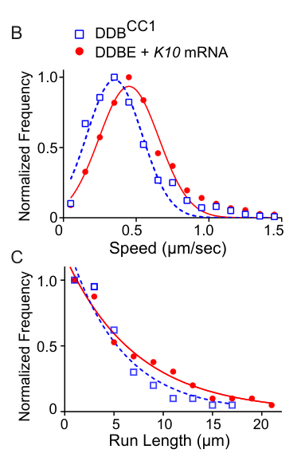

Bicaudal-D (BicD) is a dimeric coiled-coil protein of the BICD family that acts as an activating cargo adaptor for cytoplasmic dynein-1. Its N-terminal coiled coils bind dynein and dynactin, while its C-terminal cargo-binding domain binds the RNA-binding protein Egalitarian (Egl), GTP-bound Rab GTPases (Rab6, Rab2, Rab30, Rab39) and clathrin heavy chain. BicD is autoinhibited until cargo binds; Egl bound to an RNA localization signal licenses BicD to recruit dynein-dynactin and switch on long-distance minus-end-directed transport, making Egl-BicD the minimal link between localizing mRNAs and the motor. In the germline, BicD-dynein transports determinant mRNAs and proteins from nurse cells into the pro-oocyte and is required for oocyte specification, oocyte microtubule polarity and localization of oskar, bicoid and gurken mRNAs; dominant alleles mislocalize the posterior determinant nanos and produce bicaudal (double-abdomen) embryos. BicD also localizes mRNAs apically in blastoderm embryos and neuroblasts (e.g. inscuteable), is required for apical migration of photoreceptor precursor nuclei, supports synaptic vesicle recycling at the neuromuscular junction by promoting clathrin transport, and, redundantly with its paralog BicDR, transports Rab6 and Spindle-F vesicles in growing bristle shafts.
| GO Term | Evidence | Action | Reason |
|---|---|---|---|
|
GO:0003729
mRNA binding
|
NAS
NOT
PMID:12446149 Intracellular mRNA localization: motors move messages. |
ACCEPT |
Summary: NOT mRNA binding (NAS, from a review of motor-driven mRNA transport). BicD is recruited to localizing transcripts through the RNA-binding protein Egalitarian rather than by binding RNA itself.
Reason: The negated statement is consistent with the biochemistry: Egl, not BicD, directly recognizes mRNA localization signals, and BicD associates with RNA through its C-terminal cargo-binding domain contacting Egl. Reconstitution shows RNA promotes the Egl-BicD interaction rather than binding BicD directly. The review cited is abstract-only here, but the negation is well supported by later primary work.
Supporting Evidence:
PMID:19515976
despite lacking a canonical RNA-binding motif, Egl directly recognizes active localization elements
PMID:19515976
We also reveal a physical interaction between Egl and a conserved domain for cargo recruitment in BicD
PMID:29944118
A Bicaudal-D (BicD) adaptor protein and the RNA-binding protein Egalitarian (Egl) are sufficient for long-distance mRNA transport by the dynein motor and its accessory complex dynactin
file:DROME/BicD/BicD-deep-research-falcon.md
BicD should not itself be annotated as the principal sequence-specific RNA-binding protein; it is the motor adaptor downstream of Egl
|
|
GO:0005515
protein binding
|
IPI
PMID:17329360 Rab6 mediates membrane organization and determinant localiza... |
MODIFY |
Summary: Protein binding (IPI) with Rab6 from Coutelis and Ephrussi 2007: Rab6 is found in a complex with BicD in vivo.
Reason: Generic protein binding is uninformative. The partner is the small GTPase Rab6, a membrane cargo-recruiting partner that binds the BicD C-terminal domain (UniProt region 699-722). The informative term is small GTPase binding, which is also supported by GTP-dependent Rab6/Rab2/Rab30/Rab39 binding in affinity-chromatography studies.
Proposed replacements:
small GTPase binding
Supporting Evidence:
PMID:17329360
We show that, in vivo, Rab6 is found in a complex with Bicaudal-D, and that Rab6 and Bicaudal-D cooperate in oskar mRNA localization
PMID:25453831
Rab30 interactors from the detergent lysate included the dynein adaptor BicD (that also binds Rab6 and Rab2)
file:DROME/BicD/BicD-uniprot.txt
oogenesis, plays a specific role, together with Rab6 but independently
|
|
GO:0005515
protein binding
|
IPI
PMID:20111007 Bicaudal-D binds clathrin heavy chain to promote its transpo... |
MODIFY |
Summary: Protein binding (IPI) with clathrin heavy chain (Chc), the most abundant BicD co-precipitating protein from head extracts; binding is direct.
Reason: Generic protein binding is uninformative. The paper shows direct binding of the BicD C-terminal domain to clathrin heavy chain, and this is already captured by the separate clathrin heavy chain binding IPI row from the same paper; that is the appropriate informative replacement.
Proposed replacements:
clathrin heavy chain binding
Supporting Evidence:
PMID:20111007
BicD binds Chc directly and interacts genetically with components of the pathway for clathrin-mediated membrane trafficking
|
|
GO:0005737
cytoplasm
|
IDA
PMID:2590944 Structure of the Drosophila BicaudalD protein and its role i... |
ACCEPT |
Summary: Cytoplasm (IDA): BicD protein is distributed in the oocyte cytoplasm.
Reason: BicD is a soluble coiled-coil adaptor of cytoplasmic dynein; immunolocalization shows cytoplasmic distribution in oocytes, where it concentrates with localized determinants.
Supporting Evidence:
PMID:2590944
BicD protein is uniformly distributed throughout wild-type oocytes
|
|
GO:0005794
Golgi apparatus
|
IBA
GO_REF:0000033 |
ACCEPT |
Summary: Golgi apparatus (IBA) from the BICD family node, seeded by human BICD2/BICD1 and mouse Bicd2.
Reason: The Golgi association of BICD proteins derives from their binding to Golgi Rab GTPases. Drosophila BicD is a GTP-dependent effector of Rab6, Rab2, Rab30 and Rab39 and was identified as a Golgi-localized coiled-coil protein among Rab30 effectors, so it lies within the clade that inherited this location; is_active_in is appropriate for the Rab-bound membrane pool.
Supporting Evidence:
PMID:19001129
two further Golgi-localized coiled-coil proteins, BicaudalD (BicD) and dp115
PMID:25453831
Rab30 interactors from the detergent lysate included the dynein adaptor BicD (that also binds Rab6 and Rab2)
|
|
GO:0005829
cytosol
|
HDA
PMID:25294944 Subcellular localisations of the CPTI collection of YFP-tagg... |
ACCEPT |
Summary: Cytosol (HDA) from the CPTI YFP-trap localization survey in embryos.
Reason: BicD lacks transmembrane or organelle-targeting sequences and its autoinhibited, cargo-free pool is soluble; a cytosolic localization in a high-throughput embryo screen is consistent with this. BicD is not named in the cached main text (likely in supplementary data), so this acceptance defers to the curator.
Supporting Evidence:
PMID:2590944
BicD protein is uniformly distributed throughout wild-type oocytes
|
|
GO:0005829
cytosol
|
IBA
GO_REF:0000033 |
ACCEPT |
Summary: Cytosol (IBA) from the BICD family node.
Reason: The soluble autoinhibited adaptor pool is cytosolic; cargo binding recruits BicD to dynein-dynactin on microtubules. Consistent with the human BICD2 review.
Supporting Evidence:
PMID:32378283
The dynein adaptor Drosophila Bicaudal D (BicD) is auto-inhibited and activates dynein motility only after cargo is bound
|
|
GO:0005856
cytoskeleton
|
IEA
GO_REF:0000044 |
ACCEPT |
Summary: Cytoskeleton (IEA from UniProt subcellular location, which is itself ECO:0000305 inference).
Reason: BicD is not a structural cytoskeletal polymer (the early intermediate-filament-like model was not borne out), but it functions bound to dynein-dynactin on microtubules; the broad location is acceptable as in the human BICD2 review.
Supporting Evidence:
PMID:38264934
In the dynein-dynactin-Bicaudal-D transport machinery, Bicaudal-D (BicD) links the cargo to the motor
|
|
GO:0007293
germarium-derived egg chamber formation
|
IMP
PMID:11254350 Bicaudal-D is essential for egg chamber formation and cytosk... |
KEEP AS NON CORE |
Summary: Germarium-derived egg chamber formation (IMP) from heptad-repeat deletion alleles of BicD.
Reason: The phenotype is real and specific to the BicD germline requirement, but it is a developmental consequence of loss of dynein-dependent transport into the oocyte rather than a direct function; keep as non-core developmental process.
Supporting Evidence:
PMID:11254350
In the germarium Bic-D is required for the organization of the egg chamber and the structural integrity of the oocyte and nurse cells
|
|
GO:0007294
germarium-derived oocyte fate determination
|
IMP
PMID:1959135 Requirement for phosphorylation and localization of the Bica... |
KEEP AS NON CORE |
Summary: Germarium-derived oocyte fate determination (IMP), the classic early BicD requirement.
Reason: BicD is required for oocyte differentiation because the Egl-BicD-dynein machinery transports determinant mRNAs and proteins into the pro-oocyte. This is a well-established and important developmental role, but it is a downstream outcome of the adaptor function; kept as non-core in the sense used in this project (developmental process).
Supporting Evidence:
PMID:1959135
Bic-D is required for the differentiation of an oocyte and hence for fertility
PMID:1959135
Recessive mutations in Bic-D block the oocyte-specific accumulation of its own and other RNAs
|
|
GO:0007309
oocyte axis specification
|
TAS
PMID:11784091 Structure and function of the egg cortex from oogenesis thro... |
KEEP AS NON CORE |
Summary: Oocyte axis specification (TAS) from a review of the egg cortex.
Reason: BicD mutants mislocalize posterior (oskar/nanos) and anterior determinants and dominant alleles produce double-abdomen embryos, so participation in establishing oocyte axes via mRNA localization is well supported by primary literature, although the cited review is abstract-only here and does not mention BicD in its abstract. Developmental outcome; non-core.
Supporting Evidence:
PMID:2590944
it encodes a coiled-coil protein similar to the carboxy-terminal portion of the myosin heavy chain
PMID:8951073
we show that Bic-D is required for the localization of specific mRNAs at both the anterior and posterior of the oocyte
PMID:17329360
We show that, in vivo, Rab6 is found in a complex with Bicaudal-D, and that Rab6 and Bicaudal-D cooperate in oskar mRNA localization
|
|
GO:0007312
oocyte nucleus migration involved in oocyte dorsal/ventral axis specification
|
TAS
PMID:9642168 Control of mRNA stability and translation during Drosophila ... |
UNDECIDED |
Summary: Oocyte nucleus migration involved in D/V axis specification (TAS) from a review on mRNA stability and translation control.
Reason: The cited review is abstract-only and its abstract concerns translational control and mRNA stability, not nuclear migration. The same review supports an identical TAS on egl. Direct primary evidence that BicD drives migration of the oocyte nucleus was not found in the accessible literature; Bic-D::GFP accumulates next to the oocyte nucleus and a role in tethering the nucleus was only proposed. Dynein and Lis-1 are required for oocyte nucleus positioning, so a BicD role is plausible but unverified here.
Supporting Evidence:
PMID:10825285
Asymmetric subcellular accumulation of Bic-D and the polarization of the oocyte nucleus may reflect the function of this localization machinery in vectorial mRNA localization and in tethering of the oocyte nucleus
|
|
GO:0008093
cytoskeletal adaptor activity
|
IEA
GO_REF:0000002 |
ACCEPT |
Summary: Cytoskeletal adaptor activity (IEA, InterPro BICD family).
Reason: Core molecular function. BicD links cargoes (Egl-bound mRNAs, Rab6-positive membranes, clathrin) to the dynein-dynactin motor. Reconstitution with purified Drosophila proteins shows BicD and Egl are sufficient to link mRNA to dynein-dynactin for long-distance transport.
Supporting Evidence:
PMID:38264934
In the dynein-dynactin-Bicaudal-D transport machinery, Bicaudal-D (BicD) links the cargo to the motor
PMID:29944118
A Bicaudal-D (BicD) adaptor protein and the RNA-binding protein Egalitarian (Egl) are sufficient for long-distance mRNA transport by the dynein motor and its accessory complex dynactin
PMID:19515976
We also reveal a physical interaction between Egl and a conserved domain for cargo recruitment in BicD
|
|
GO:0008103
oocyte microtubule cytoskeleton polarization
|
IMP
PMID:11254350 Bicaudal-D is essential for egg chamber formation and cytosk... |
KEEP AS NON CORE |
Summary: Oocyte microtubule cytoskeleton polarization (IMP).
Reason: BicD mutant ovaries fail to establish and maintain the polarized oocyte microtubule network. This is likely an indirect consequence of failed dynein-dependent transport (e.g. of Rab6-dependent membranes and determinants) rather than a direct microtubule-organizing activity; retain as non-core.
Supporting Evidence:
PMID:11254350
Bic-D function is required for both the establishment of the polarized microtubule network and its maintenance throughout oogenesis
PMID:17329360
We show that, in vivo, Rab6 is found in a complex with Bicaudal-D, and that Rab6 and Bicaudal-D cooperate in oskar mRNA localization
|
|
GO:0008298
intracellular mRNA localization
|
IMP
PMID:15530398 Inscuteable mRNA localization is dynein-dependent and regula... |
ACCEPT |
Summary: Intracellular mRNA localization (IMP): Egl/BicD/dynein mediates apical localization of inscuteable mRNA in neuroblasts.
Reason: Localization of specific mRNAs by dynein is the best-characterized BicD process, established in oocytes, blastoderm embryos and neuroblasts. BicD performs the linking/activation step of this transport.
Supporting Evidence:
PMID:15530398
the Egalitarian (Egl)/Bicaudal-D (BicD)/dynein mRNA transport machinery mediates apical localization of insc mRNA transcripts in neuroblasts
PMID:8951073
we show that Bic-D is required for the localization of specific mRNAs at both the anterior and posterior of the oocyte
PMID:29944118
A Bicaudal-D (BicD) adaptor protein and the RNA-binding protein Egalitarian (Egl) are sufficient for long-distance mRNA transport by the dynein motor and its accessory complex dynactin
|
|
GO:0022416
chaeta development
|
IGI
PMID:38264934 Role of BicDR in bristle shaft construction and support of B... |
KEEP AS NON CORE |
Summary: Chaeta development (IGI with BicDR).
Reason: BicD and its paralog BicDR act redundantly in bristle shaft construction, where they support dynein-dependent transport of Rab6 and Spn-F towards the bristle tip. A genuine but downstream developmental role.
Supporting Evidence:
PMID:38264934
Here we showed that the reduced activity of BicD and BicDR affects the Rab6 and Spn-F levels and localization in the growing bristle, linking BicD and BicDR to the dynein-dependent microtubule transport of vesicles and bristle factors to their proper position in the bristle where they perform their function
PMID:38264934
Together with BicD, it contributes to the organization and stability of the actin cytoskeleton in the not-yet-chitinized bristle shaft
file:DROME/BicD/BicD-uniprot.txt
Functions redundantly with BicDR
|
|
GO:0030100
regulation of endocytosis
|
IMP
PMID:24718986 Clathrin heavy chain plays multiple roles in polarizing the ... |
KEEP AS NON CORE |
Summary: Regulation of endocytosis (IMP) from Chc/BicD work in oocytes.
Reason: Bic-D is needed for elevated endocytic activity at the posterior of the oocyte, partly indirectly through oskar mRNA localization and partly through transport of Chc mRNA and protein to the oocyte cortex. The effect is real but indirect (transport of endocytic machinery), so non-core.
Supporting Evidence:
PMID:24718986
our results show that Bic-D is also needed for the elevated endocytic activity at the posterior of the oocyte
PMID:24718986
Apart from affecting endocytosis indirectly by its role in osk mRNA localization
|
|
GO:0030669
clathrin-coated endocytic vesicle membrane
|
IDA
PMID:20111007 Bicaudal-D binds clathrin heavy chain to promote its transpo... |
KEEP AS NON CORE |
Summary: Colocalizes with clathrin-coated endocytic vesicle membrane (IDA): BicD::eGFP puncta overlap with Chc puncta in presynaptic boutons.
Reason: The colocalizes_with qualifier correctly limits the claim. Most intracellular Chc puncta in boutons overlap BicD puncta, consistent with BicD transporting clathrin-associated material, but the puncta were not shown to be endocytic vesicles and BicD is a transient peripheral adaptor. Retain as non-core.
Supporting Evidence:
PMID:20111007
puncta within the bouton cytoplasm and 70% of these ( n =46) co-localised with a discernible punctum of BicD
|
|
GO:0031267
small GTPase binding
|
IPI
PMID:19001129 Golgi coiled-coil proteins contain multiple binding sites fo... |
ACCEPT |
Summary: Small GTPase binding (IPI) with Rab30.
Reason: BicD was recovered as an abundant Rab30 effector and the interaction confirmed with a specific antibody; BicD is an established Rab GTPase effector (Rab6, Rab2, Rab30, Rab39), and Rab binding is how it engages membrane cargo.
Supporting Evidence:
PMID:19001129
the interaction between Rab30 and BicD was confirmed using a specific antibody
PMID:25453831
BicD also showed GTP-dependent binding to Rab30 and to the Rab2 relative Rab39
|
|
GO:0031267
small GTPase binding
|
IPI
PMID:25453831 Toward a comprehensive map of the effectors of rab GTPases. |
ACCEPT |
Summary: Small GTPase binding (IPI) from a comprehensive affinity-chromatography map of Drosophila Rab effectors.
Reason: BicD bound GTP-locked Rab6, Rab2, Rab30 and Rab39 in a GTP-dependent manner, the behaviour of a genuine Rab effector. Rab binding via the C-terminal cargo-binding domain is how BicD recruits membrane cargo to dynein.
Supporting Evidence:
PMID:25453831
Rab30 interactors from the detergent lysate included the dynein adaptor BicD (that also binds Rab6 and Rab2)
PMID:25453831
BicD also showed GTP-dependent binding to Rab30 and to the Rab2 relative Rab39
|
|
GO:0031267
small GTPase binding
|
IPI
PMID:25453831 Toward a comprehensive map of the effectors of rab GTPases. |
ACCEPT |
Summary: Small GTPase binding (IPI) from a comprehensive affinity-chromatography map of Drosophila Rab effectors.
Reason: BicD bound GTP-locked Rab6, Rab2, Rab30 and Rab39 in a GTP-dependent manner, the behaviour of a genuine Rab effector. Rab binding via the C-terminal cargo-binding domain is how BicD recruits membrane cargo to dynein.
Supporting Evidence:
PMID:25453831
Rab30 interactors from the detergent lysate included the dynein adaptor BicD (that also binds Rab6 and Rab2)
PMID:25453831
BicD also showed GTP-dependent binding to Rab30 and to the Rab2 relative Rab39
|
|
GO:0031267
small GTPase binding
|
IPI
PMID:25453831 Toward a comprehensive map of the effectors of rab GTPases. |
ACCEPT |
Summary: Small GTPase binding (IPI) from a comprehensive affinity-chromatography map of Drosophila Rab effectors.
Reason: BicD bound GTP-locked Rab6, Rab2, Rab30 and Rab39 in a GTP-dependent manner, the behaviour of a genuine Rab effector. Rab binding via the C-terminal cargo-binding domain is how BicD recruits membrane cargo to dynein.
Supporting Evidence:
PMID:25453831
Rab30 interactors from the detergent lysate included the dynein adaptor BicD (that also binds Rab6 and Rab2)
PMID:25453831
BicD also showed GTP-dependent binding to Rab30 and to the Rab2 relative Rab39
|
|
GO:0032050
clathrin heavy chain binding
|
IPI
PMID:20111007 Bicaudal-D binds clathrin heavy chain to promote its transpo... |
ACCEPT |
Summary: Clathrin heavy chain binding (IPI): Chc is the most abundant BicD partner in head extracts and binds BicD directly.
Reason: Direct binding of Chc to the BicD C-terminal domain is shown in the paper; this is a specific cargo interaction that promotes Chc transport at synapses.
Supporting Evidence:
PMID:20111007
BicD binds Chc directly and interacts genetically with components of the pathway for clathrin-mediated membrane trafficking
PMID:20111007
Directed transport and subcellular localisation of Chc is strongly perturbed in BicD mutant presynaptic boutons
|
|
GO:0034452
dynactin binding
|
IBA
GO_REF:0000033 |
ACCEPT |
Summary: Dynactin binding (IBA).
Reason: BicD N-terminal coiled coils bind dynein and dynactin; for Drosophila BicD this is shown by in vitro binding and by reconstitution, where cargo-activated BicD recruits dynein and dynactin. Consistent with the PAINT node placement across the BICD family.
Supporting Evidence:
PMID:38264934
it has been shown that BicD and BicDR require it for the efficient binding to dynein and dynactin in vitro
PMID:29944118
which licenses the latter protein to recruit dynein and dynactin
|
|
GO:0048477
oogenesis
|
HMP
PMID:1783295 Female sterile mutations on the second chromosome of Drosoph... |
KEEP AS NON CORE |
Summary: Oogenesis (HMP) from a large female-sterile mutagenesis screen.
Reason: BicD is essential for oogenesis (oocyte differentiation, determinant transport). The cached screen paper is abstract-only and does not name BicD in its abstract, but the requirement is well established. Broad developmental process; non-core.
Supporting Evidence:
PMID:1959135
Bic-D is required for the differentiation of an oocyte and hence for fertility
|
|
GO:0048477
oogenesis
|
IMP
PMID:23450845 A mosaic genetic screen for genes involved in the early step... |
KEEP AS NON CORE |
Summary: Oogenesis (IMP) from a mosaic screen that recovered two new null alleles of BicD.
Reason: Loss of BicD blocks oocyte specification in egg chambers; correct but a broad developmental outcome of the transport function.
Supporting Evidence:
PMID:23450845
This result showed that we were able to generate and identify two alleles of Bicaudal-D, which validated our screening strategy
PMID:23450845
Egg chambers mutant for null alleles Bicaudal-D, which is on chromosome 2L, show an identical phenotype
|
|
GO:0048488
synaptic vesicle endocytosis
|
IGI
PMID:20111007 Bicaudal-D binds clathrin heavy chain to promote its transpo... |
MODIFY |
Summary: Synaptic vesicle endocytosis (IGI with endophilin A).
Reason: The paper explicitly concludes that BicD is not directly required for clathrin-mediated budding or uncoating, and that BicD/dynein have a kinetic role in recycling pre-internalised membrane to the releasable pool; the EndoA interaction suppresses recycling defects. Synaptic vesicle recycling describes the supported process more accurately than the endocytic step itself.
Proposed replacements:
synaptic vesicle recycling
Supporting Evidence:
PMID:20111007
These data indicate that, even during high-frequency stimulation, BicD is not directly required for budding of clathrin-mediated vesicles from the plasma membrane or subsequent uncoating
PMID:20111007
Collectively, our data indicate that BicD has a kinetic function in stimulating the rate of recycling of pre-internalised vesicles, as opposed to an obligatory role in any one step
PMID:20111007
A kinetic role of BicD-mediated transport in vesicle recycling was also supported by our observation that dye release defects of BicD mutants could be fully suppressed by presynaptic overexpression of EndoA
|
|
GO:0050658
RNA transport
|
IMP
PMID:17442699 A Dynein-dependent shortcut rapidly delivers axis determinat... |
MODIFY |
Summary: RNA transport (IMP): gurken RNA requires BicD and dynein for transport toward the ring canals.
Reason: Correct but the cargo is mRNA (gurken, and by implication bicoid and oskar); mRNA transport, already annotated from other papers, is the more precise term.
Proposed replacements:
mRNA transport
Supporting Evidence:
PMID:17442699
gurken transcripts, but not control transcripts, recruit the cytoplasmic Dynein-associated co-factors Bicaudal D (BicD) and Egalitarian in the nurse cells
PMID:17442699
gurken RNA requires BicD and Dynein for its transport towards the ring canals
|
|
GO:0051028
mRNA transport
|
IDA
PMID:16009136 Dynein anchors its mRNA cargo after apical transport in the ... |
ACCEPT |
Summary: mRNA transport (IDA) from live imaging of apical mRNA transport and anchoring in blastoderm embryos.
Reason: BicD is recruited with Egl and dynein to apically transported transcripts; the cached abstract focuses on dynein as an anchor, but the full-text-based IDA is consistent with the well-established BicD role in dynein-mediated mRNA transport in the embryo.
Supporting Evidence:
PMID:16009136
apical anchoring of RNA requires microtubules and involves dynein as a static anchor that remains with the cargo at its final destination
PMID:16860745
We show that these proteins, together with the dynein motor, are recruited differentially to different RNA signals
|
|
GO:0051028
mRNA transport
|
IMP
PMID:16860745 Guidance of bidirectional motor complexes by mRNA cargoes th... |
ACCEPT |
Summary: mRNA transport (IMP): minus-end-directed runs of localizing mRNAs depend on Egl and BicD dosage.
Reason: Core process. BicD, with Egl, is recruited by RNA localization signals and increases the number and activity of dynein motors on the RNA, biasing bidirectional transport towards minus ends.
Supporting Evidence:
PMID:16860745
Increased minus-end motility is dependent on the dosage of RNA elements and the proteins Egalitarian (Egl) and Bicaudal-D (BicD)
PMID:16860745
We show that these proteins, together with the dynein motor, are recruited differentially to different RNA signals
|
|
GO:0070507
regulation of microtubule cytoskeleton organization
|
IBA
GO_REF:0000033 |
KEEP AS NON CORE |
Summary: Regulation of microtubule cytoskeleton organization (IBA).
Reason: Loss of BicD disrupts oocyte microtubule polarity in Drosophila and centrosomal microtubule arrays in mammals, but these are indirect consequences of dynein-dependent transport rather than a direct regulatory activity on microtubules. Consistent with the human BICD2 review.
Supporting Evidence:
PMID:11254350
Bic-D function is required for both the establishment of the polarized microtubule network and its maintenance throughout oogenesis
|
|
GO:0070840
dynein complex binding
|
IBA
GO_REF:0000033 |
ACCEPT |
Summary: Dynein complex binding (IBA).
Reason: Drosophila BicD binds cytoplasmic dynein via its N-terminal coiled coil, and after cargo binding recruits dynein-dynactin in reconstitution assays. Core interaction underlying its adaptor function.
Supporting Evidence:
PMID:38264934
it has been shown that BicD and BicDR require it for the efficient binding to dynein and dynactin in vitro
PMID:29944118
which licenses the latter protein to recruit dynein and dynactin
PMID:32378283
The dynein adaptor Drosophila Bicaudal D (BicD) is auto-inhibited and activates dynein motility only after cargo is bound
|
|
GO:0070840
dynein complex binding
|
IEA
GO_REF:0000002 |
ACCEPT |
Summary: Dynein complex binding (IEA, InterPro BICD).
Reason: As for the IBA row: dynein binding is conserved across the BICD family and shown for Drosophila BicD.
Supporting Evidence:
PMID:29944118
which licenses the latter protein to recruit dynein and dynactin
|
|
GO:0072393
microtubule anchoring at microtubule organizing center
|
IBA
GO_REF:0000033 |
KEEP AS NON CORE |
Summary: Microtubule anchoring at microtubule organizing center (IBA).
Reason: The family-level evidence (BICD/dynein and GSK-3beta in mammalian cells) indicates an indirect role, likely through dynein transport of centrosomal anchoring proteins. No Drosophila-specific evidence contradicts inheritance, but the role is peripheral. Consistent with the human BICD2 review.
Supporting Evidence:
PMID:11254350
Bic-D function is required for both the establishment of the polarized microtubule network and its maintenance throughout oogenesis
|
|
GO:0098793
presynapse
|
IEA
GO_REF:0000108 |
KEEP AS NON CORE |
Summary: Presynapse (IEA inferred from the synaptic vesicle endocytosis annotation).
Reason: BicD::eGFP is present in presynaptic boutons of the larval NMJ where it colocalizes with clathrin puncta, so the location is supported, but it is one of many sites of BicD action.
Supporting Evidence:
PMID:20111007
puncta within the bouton cytoplasm and 70% of these ( n =46) co-localised with a discernible punctum of BicD
PMID:20111007
Directed transport and subcellular localisation of Chc is strongly perturbed in BicD mutant presynaptic boutons
|
|
GO:0098840
protein transport along microtubule
|
IMP
PMID:38264934 Role of BicDR in bristle shaft construction and support of B... |
ACCEPT |
Summary: Protein transport along microtubule (IMP) from bristle-shaft transport of Rab6 and Spn-F.
Reason: BicD (with BicDR) is required for dynein-dependent transport of Rab6 and Spn-F along the microtubules of the growing bristle shaft; together with BicD-promoted Chc transport at synapses, this supports BicD acting in microtubule-based transport of protein cargo.
Supporting Evidence:
PMID:38264934
Here we showed that the reduced activity of BicD and BicDR affects the Rab6 and Spn-F levels and localization in the growing bristle, linking BicD and BicDR to the dynein-dependent microtubule transport of vesicles and bristle factors to their proper position in the bristle where they perform their function
PMID:20111007
Directed transport and subcellular localisation of Chc is strongly perturbed in BicD mutant presynaptic boutons
|
|
GO:0140312
cargo adaptor activity
|
IMP
PMID:38264934 Role of BicDR in bristle shaft construction and support of B... |
MODIFY |
Summary: Cargo adaptor activity (IMP) from the BicD/BicDR bristle study.
Reason: GO:0140312 is defined as binding the structural scaffold of a vesicle coat (clathrin, COPII) and bridging membrane, cargo receptor and deformation machinery, i.e. a coat adaptor such as AP-2. BicD is a motor adaptor linking cargo to dynein-dynactin; the paper describes exactly this. The correct term is cytoskeletal adaptor activity.
Proposed replacements:
cytoskeletal adaptor activity
Supporting Evidence:
PMID:38264934
In the dynein-dynactin-Bicaudal-D transport machinery, Bicaudal-D (BicD) links the cargo to the motor
|
|
GO:2000302
positive regulation of synaptic vesicle exocytosis
|
IMP
PMID:20111007 Bicaudal-D binds clathrin heavy chain to promote its transpo... |
KEEP AS NON CORE |
Summary: Positive regulation of synaptic vesicle exocytosis (IMP) from FM1-43 and EJP assays at the larval NMJ.
Reason: BicD mutants fail to sustain neurotransmission during high-frequency stimulation and retain pre-internalised dye, but the authors attribute this to slower recycling of internalised membrane to the releasable pool rather than to a role in the exocytic event, and state there is no obligatory requirement for BicD in exocytosis. The regulation annotation reflects the phenotypic readout; retained as non-core since synaptic vesicle recycling is the more accurate description.
Supporting Evidence:
PMID:20111007
Collectively, these observations provide further evidence that there is not an obligatory requirement for BicD in endocytosis or exocytosis
PMID:20111007
shows that BicD/dynein transport functions in the pathway for recycling the readily releasable pool
|
|
GO:2000370
positive regulation of clathrin-dependent endocytosis
|
IMP
PMID:20111007 Bicaudal-D binds clathrin heavy chain to promote its transpo... |
KEEP AS NON CORE |
Summary: Positive regulation of clathrin-dependent endocytosis (IMP).
Reason: Reducing BicD dosage enhances the shibire (dynamin) phenotype and BicD mutants take up less membrane during intense stimulation, indicating BicD promotes a dynamin-dependent process; mechanistically this is thought to occur by transporting Chc to replenish plasma-membrane clathrin, not by participating in vesicle budding. Non-core.
Supporting Evidence:
PMID:20111007
The enhancement of the shi phenotype on lowering BicD dosage indicates that BicD normally promotes a dynamin-dependent process involved in neurotransmission
PMID:20111007
These data indicate that, even during high-frequency stimulation, BicD is not directly required for budding of clathrin-mediated vesicles from the plasma membrane or subsequent uncoating
PMID:20111007
Thus, BicD is required to augment the rate of recycling of internalised membrane
|
|
GO:0140660
cytoskeletal motor activator activity
|
IDA
PMID:29944118 RNA-directed activation of cytoplasmic dynein-1 in reconstit... |
NEW |
Summary: Drosophila BicD, in complex with Egl and a localizing RNA, activates processive minus-end motility of dynein-dynactin in reconstitution with purified proteins.
Reason: BicD is an activating dynein adaptor: purified Egl/DmBicD with dynactin increases the number of processive dynein runs in an RNA-dependent manner, and BicD is autoinhibited until cargo binds. Binding and increasing the activity of the motor is the definition of GO:0140660, which dynein/dynactin binding terms do not capture. Consistent with the NEW annotation on human BICD2. Falcon deep research additionally cites independent reconstitution of full-length fly BicD-Egl with K10 mRNA (Sladewski et al. 2018) showing RNA-triggered opening of autoinhibited BicD and robust dynein-dynactin motility.
Supporting Evidence:
PMID:29944118
The hairy RNA significantly increased the number of processive movements of dynein in the presence of dynactin and Egl/DmBicD
PMID:29944118
A Bicaudal-D (BicD) adaptor protein and the RNA-binding protein Egalitarian (Egl) are sufficient for long-distance mRNA transport by the dynein motor and its accessory complex dynactin
PMID:32378283
The dynein adaptor Drosophila Bicaudal D (BicD) is auto-inhibited and activates dynein motility only after cargo is bound
file:DROME/BicD/BicD-deep-research-falcon.md
Addition of **K10 mRNA** opened the complex and produced robust minus-end-directed motility
|
|
GO:0007097
nuclear migration
|
IMP
PMID:15582780 The Ste20-like kinase misshapen functions together with Bica... |
NEW |
Summary: BicD is required for apical migration of photoreceptor (R-cell) precursor nuclei in the eye disc and for nuclear localization in the developing nervous system.
Reason: Participation: BicD is the dynein adaptor/activator whose phosphorylation-dependent apical accumulation, together with dynein, is required for dynein-driven apical R-cell nuclear migration, so it contributes part of the motor machinery that moves the nucleus rather than being a passive requirement. The cargo linkage to the nucleus in R cells is not defined (Klarsicht is the KASH protein there). Comparator: Dhc64C carries nuclear migration (IBA) and human BICD2 carries nuclear migration (NEW, IMP). Evidence is from abstracts only (Houalla 2005, Swan 1999), so this is proposed at the general term.
Supporting Evidence:
PMID:15582780
Bicaudal-D (Bic-D), an evolutionarily conserved dynein-interacting protein, is required for developmental control of nuclear migration in Drosophila
PMID:15582780
Msn, like Bic-D, is required for the apical migration of differentiating R-cell precursor nuclei
PMID:15582780
Msn increases the phosphorylation of Bic-D, which appears to be necessary for the apical accumulation of both Bic-D and dynein in developing R-cell precursor cells
PMID:10559989
DLis-1 and Bic-D are further required for nuclear localization in the developing nervous system
|
Q: What links BicD-dynein to the nucleus during apical R-cell nuclear migration - does BicD bind the KASH protein Klarsicht or a nuclear pore component (as human BICD2 binds nesprin-2 and RANBP2)?
Suggested experts: Drosophila eye developmental biologists, nuclear positioning cell biologists
Q: Is BicD directly required for migration or anchoring of the oocyte nucleus (the basis of the TAS annotation to GO:0007312), or is its effect via gurken mRNA localization?
Suggested experts: Drosophila oogenesis researchers
Experiment: Test whether BicD localizes to the photoreceptor precursor nuclear envelope and binds Klarsicht or Nup358 using proximity labelling and cargo-binding-domain point mutants (e.g. K730) in eye-disc clones, scoring apical nuclear migration.
Type: proximity labelling and mutant rescue
The research report should be a detailed narrative explaining the function, biological processes, and localization of the gene product. Citations should be given for all claims.
You should prioritize authoritative reviews and primary scientific literature when conducting research. You can supplement
this with annotations you find in gene/protein databases, but these can be outdated or inaccurate.
We are specifically interested in the primary function of the gene - for enzymes, what reaction is catalyzed, and what is the substrate specificity? For transporters, what is the substrate? For structural proteins or adapters, what is the broader structural role? For signaling molecules, what is the role in the pathway.
We are interested in where in or outside the cell the gene product carries out its function.
We are also interested in the signaling or biochemical pathways in which the gene functions. We are less interested in broad pleiotropic effects, except where these elucidate the precise role.
Include evidence where possible. We are interested in both experimental evidence as well as inference from structure, evolution, or bioinformatic analysis. Precise studies should be prioritized over high-throughput, where available.
The requested target is correctly identified: BicD/CG6605 from Drosophila melanogaster is Bicaudal-D, the founding member of the BICD family. It is not the related fly protein BicDR and not mammalian BICD1 or BICD2. The literature’s predominantly α-helical, coiled-coil architecture—including CC1, CC2 and CC3 and a conserved BICD-family region in CC3—is consistent with the supplied InterPro IPR018477 and Pfam PF09730 annotations. Thus, the symbol, organism, family and domains all align; research did not proceed on a similarly named protein from another organism. (hoogenraad2016bicaudaldfamily pages 4-5, hoogenraad2016bicaudaldfamily pages 2-4)
Primary annotation: BicD is a non-enzymatic, dimeric activating cargo adaptor for cytoplasmic dynein–dynactin. It couples selected cargoes—most securely demonstrated for Egalitarian-bound messenger ribonucleoprotein particles—to minus-end-directed microtubule transport. It has no catalytic reaction or small-molecule substrate. Its relevant “specificity” is instead determined by cargo receptors and localization signals, especially Egl recognition of structured elements in target RNAs. (hoogenraad2016bicaudaldfamily pages 4-5, cassella2021landscapeandfunctions pages 43-46, sladewski2018recruitmentoftwo pages 2-4)
| Aspect | Best-supported annotation | Evidence type | Representative source/date |
|---|---|---|---|
| Identity | Drosophila melanogaster Bicaudal-D (BicD; UniProt P16568), the founding member of the BICD adaptor family; distinct from fly BicDR and mammalian BICD1/BICD2. | Species-specific literature and comparative family analysis | Hoogenraad & Akhmanova, May 2016 (hoogenraad2016bicaudaldfamily pages 4-5, hoogenraad2016bicaudaldfamily pages 2-4) |
| Coiled-coil architecture | Predominantly α-helical, dimeric protein organized into N-terminal CC1, middle CC2, and C-terminal CC3; the conserved BICD domain lies within CC3. | Sequence/structure analysis and review synthesis | Hoogenraad & Akhmanova, May 2016 (hoogenraad2016bicaudaldfamily pages 4-5, hoogenraad2016bicaudaldfamily pages 7-9) |
| Dynein/dynactin binding | The N-terminal motor-binding region—principally CC1—engages dynein and dynactin and promotes processive, microtubule-minus-end-directed transport. | Biochemistry, genetics, and reconstituted motility | Hoogenraad & Akhmanova, May 2016; Baker et al., September 2023 preprint (baker2023thebicaudaldegalitariancomplex pages 1-2, hoogenraad2016bicaudaldfamily pages 2-4) |
| CC3 cargo binding | C-terminal CC3 is the cargo/partner-binding region. The conserved K730M substitution disrupts association with Egl, Rab6, and FMRP, supporting a shared or overlapping cargo-binding surface. | Mutational interaction analysis | Hoogenraad & Akhmanova, May 2016 (hoogenraad2016bicaudaldfamily pages 7-9) |
| Autoinhibition | Cargo-free full-length BicD adopts a folded/looped state in which CC3 contacts the N-terminal region and occludes productive dynein–dynactin binding; cargo engagement opens the adaptor. | Electron microscopy, biochemistry, and single-molecule reconstitution | Sladewski et al., February 2018; Hoogenraad & Akhmanova, May 2016 (hoogenraad2016bicaudaldfamily pages 4-5, sladewski2018recruitmentoftwo pages 2-4, sladewski2018recruitmentoftwo pages 6-7) |
| Egl/K10 activation | Egalitarian (Egl) links localization-signal-containing RNA to BicD. Egl alone is insufficient for robust activation; Egl plus K10 mRNA disrupts BicD autoinhibition and strongly recruits/activates dynein–dynactin. Removing the K10 TLS localization element reduces complex association and motility by about twofold; adding K10 increases run frequency about fivefold. | Purified-complex EM, pull-down, and TIRF single-molecule assays | Sladewski et al., February 2018 (sladewski2018recruitmentoftwo pages 2-4, sladewski2018recruitmentoftwo pages 6-7) |
| Quantitative motility | Reconstituted dynein–dynactin–BicD–Egl–K10 mRNPs moved at 0.45 ± 0.21 µm/s with 7.2 ± 0.5 µm run lengths. Two-dynein complexes moved at 0.63 ± 0.26 µm/s and 8.9 ± 0.5 µm, versus 0.40 ± 0.14 µm/s and 5.8 ± 1.1 µm for the comparison population; two-dynein runs were about 53% longer. | Figure-level TIRF motility measurements | Sladewski et al., February 2018 (sladewski2018recruitmentoftwo media 34de6169, sladewski2018recruitmentoftwo media 4a018585) |
| RNA cargo and localization | BicD/Egl transports developmentally regulated RNAs—including K10, bicoid, gurken, oskar, pair-rule RNAs, and other localization-element-bearing transcripts—toward microtubule minus ends, notably from nurse cells into the oocyte and to apical embryonic domains. | Genetics, RNA-localization assays, and transport studies | Cassella, January 2021; Baker et al., September 2023 preprint (cassella2021landscapeandfunctions pages 43-46, baker2023thebicaudaldegalitariancomplex pages 7-8) |
| Rab6, clathrin, and FMRP partners | BicD associates with Rab6, supporting Golgi/exocytotic-vesicle transport; with clathrin heavy chain, supporting spindle and trafficking functions; and with FMRP/Fmr1, linking BicD to additional ribonucleoprotein cargo. Whether every partner directly activates BicD in vivo is not equally established. | Interaction genetics/biochemistry and review synthesis | Hoogenraad & Akhmanova, May 2016; Baker et al., September 2023 preprint (baker2023thebicaudaldegalitariancomplex pages 1-2, hoogenraad2016bicaudaldfamily pages 4-5, hoogenraad2016bicaudaldfamily pages 2-4) |
| Meiosis II and pronuclear fusion | Acute BicD depletion in newly laid eggs disrupts normal female meiosis-II products, polar-body metaphase arrest, and pronuclear fusion. BicD is required to localize Mad2, BubR1, clathrin, D-TACC, and Msps appropriately; BicD and clathrin occur at centrosomes and mitotic/meiosis-II spindles. | Acute protein degradation, localization, interaction, and developmental phenotyping | Vazquez-Pianzola et al., July 2022 (vazquezpianzola2022femalemeiosisii pages 1-3) |
| Latest target-specific model | In the female germline, Egl depletion leaves many BicD–cargo associations intact but reduces BicD–dynein association, suggesting that Egl functions chiefly as an activation/linkage factor rather than as BicD’s only cargo receptor. This remains preprint evidence. | Co-immunoprecipitation, proximity labeling, depletion, and mutant analysis | Baker et al., September 2023 bioRxiv preprint (baker2023thebicaudaldegalitariancomplex pages 1-2, baker2023thebicaudaldegalitariancomplex pages 8-10) |
Table: Evidence matrix for Drosophila melanogaster BicD (UniProt P16568), integrating molecular architecture, cargo-dependent dynein activation, localization, quantitative motility, and developmental functions. It explicitly separates the fly protein from mammalian BICD2 and labels the 2023 Baker study as preprint evidence.
BicD is a long, rod-like coiled-coil dimer. Its N-terminal region, particularly CC1, binds dynein and dynactin; CC2 occupies the middle of the molecule; and the C-terminal CC3/cargo-binding domain binds cargo-associated partners. This arrangement makes BicD a molecular bridge that both attaches cargo and promotes assembly of a processive motor complex. The conserved BICD domain lies within CC3, agreeing with the supplied family/domain annotation. (baker2023thebicaudaldegalitariancomplex pages 1-2, hoogenraad2016bicaudaldfamily pages 4-5)
Full-length BicD is regulated by autoinhibition. In the absence of activating cargo, CC3 folds back toward the N-terminal motor-binding region, producing a looped conformation that suppresses productive dynein–dynactin association. Cargo-receptor engagement opens or remodels this conformation and exposes the motor-binding region. The general model is supported by mutational, biochemical and structural observations, although some detailed conformational interpretations originated from BICD-family comparisons and should not all be treated as direct atomic-resolution evidence for fly BicD. (hoogenraad2016bicaudaldfamily pages 4-5, hoogenraad2016bicaudaldfamily pages 7-9, sladewski2018recruitmentoftwo pages 2-4)
Several fly mutations support this domain assignment. K730M in the conserved C-terminal region impairs binding to Egl, Rab6 and FMRP, whereas the dominant F684I CC3 mutation retains cargo binding but increases association of full-length BicD with dynein, consistent with disrupted autoinhibition. The N-terminal hypomorph A40V lies in a conserved motor-interaction region. (hoogenraad2016bicaudaldfamily pages 7-9)
The strongest cargo-specific mechanism is the Egalitarian–BicD pathway. Egl is the RNA-recognition component: it binds RNA localization elements and associates through its N-terminal region with BicD’s cargo-binding domain. BicD then recruits/activates dynein–dynactin. Accordingly, BicD should not itself be annotated as the principal sequence-specific RNA-binding protein; it is the motor adaptor downstream of Egl. (cassella2021landscapeandfunctions pages 43-46)
Purified-complex experiments provide unusually precise mechanistic evidence. Full-length BicD plus Egl alone remained largely looped and was inefficiently recruited to microtubule-bound dynein–dynactin. Addition of K10 mRNA opened the complex and produced robust minus-end-directed motility. K10 lacking its TLS localization element reduced motor-associated BicD–Egl complexes and motility by approximately twofold, while adding intact K10 increased run frequency approximately fivefold. Neither BicD nor Egl could simply be omitted without losing productive transport. Thus, activation is coupled to the simultaneous presence of adaptor, RNA receptor and appropriate RNA cargo. (sladewski2018recruitmentoftwo pages 2-4, sladewski2018recruitmentoftwo pages 6-7)
The reconstituted dynein–dynactin–BicD–Egl–K10 complex moved at 0.45 ± 0.21 µm s⁻¹ and had a mean run length of 7.2 ± 0.5 µm, compared with 0.35 ± 0.19 µm s⁻¹ and 5.4 ± 0.7 µm for the minimal motor complex containing the constitutively active BicD CC1 construct. The displayed speed datasets included 1,126 and 1,147 trajectories, respectively. (sladewski2018recruitmentoftwo media 34de6169, sladewski2018recruitmentoftwo media b476fa39)
BicD-containing mRNPs can recruit two dimeric dyneins. Dual-dynein complexes traveled at 0.63 ± 0.26 µm s⁻¹ with runs of 8.9 ± 0.5 µm, compared with 0.40 ± 0.14 µm s⁻¹ and 5.8 ± 1.1 µm for the comparison population; the dual-dynein runs were approximately 53% longer. A representative movie showed a two-dynein mRNP moving 12.2 µm in 20.4 s at 0.6 µm s⁻¹, versus 4.5 µm at 0.36 µm s⁻¹ for a single-dynein example. These results show that cargo assembly controls not only motor recruitment but also transport performance. (sladewski2018recruitmentoftwo pages 6-7, sladewski2018recruitmentoftwo media 4a018585, sladewski2018recruitmentoftwo media a8cda9f0)
Documented BicD/Egl-associated RNA cargoes include K10, bicoid, gurken, oskar, pair-rule transcripts such as fushi tarazu and hairy, and additional localized RNAs. These transcripts are not necessarily recognized by a simple shared primary sequence; operational specificity lies in localization elements interpreted by Egl and in assembly of the complete mRNP. Loss of BicD impairs oocyte accumulation or correct localization of multiple maternal transcripts. (cassella2021landscapeandfunctions pages 43-46)
Other reported BicD partners include:
The strength and mechanistic completeness of these assignments are unequal. Egl–RNA transport has direct reconstitution, genetics and localization evidence; some other partners are established by interaction or localization evidence without equivalent full-complex reconstitution.
BicD is a cytoplasmic transport adaptor whose localization follows the microtubule network, motor complex and cargo rather than a single permanent organelle. Its best-established sites of action are:
BicD and Egl form a functional complex required for selection and maintenance of the oocyte. Their transport pathway concentrates maternal determinants and polarity-regulating mRNAs in appropriate egg-chamber compartments. Disruption can produce a 16-nurse-cell phenotype or loss/mislocalization of oocyte-enriched transcripts. Dominant BicD alleles can also redirect oskar toward the anterior rather than allowing its normal kinesin-dependent posterior transport, illustrating that excessive or mistimed dynein engagement can be as disruptive as loss of transport. (cassella2021landscapeandfunctions pages 43-46, hoogenraad2016bicaudaldfamily pages 7-9)
Acute BicD degradation in freshly laid eggs demonstrated post-oogenesis functions that are not merely secondary consequences of earlier patterning defects. BicD is required for normal meiosis-II products, prevention of female meiotic products from re-entering the cell cycle, and pronuclear fusion. It supports localization of the spindle-assembly-checkpoint proteins Mad2 and BubR1 to female meiotic products and positions clathrin, D-TACC and Msps on meiosis-II spindles. This places BicD at the intersection of microtubule transport, spindle stability and checkpoint control. (vazquezpianzola2022femalemeiosisii pages 1-3)
Rab6 binding supports a broader role in Golgi/exocytotic-vesicle transport, while clathrin binding connects BicD to membrane trafficking and spindle-associated clathrin functions. These are adaptor functions, not enzymatic activities. (hoogenraad2016bicaudaldfamily pages 4-5, hoogenraad2016bicaudaldfamily pages 2-4, vazquezpianzola2022femalemeiosisii pages 1-3)
The most directly target-relevant recent source retrieved was the Baker et al. bioRxiv preprint, posted September 12, 2023, DOI/URL: https://doi.org/10.1101/2023.09.11.557182. It proposes a refined division of labor: after Egl depletion, BicD retains many cargo associations but loses efficient dynein association. Egl may therefore serve principally as an activating/linkage factor in the female germline rather than being BicD’s only cargo receptor. BicD mutants further suggest that increased dynein engagement does not guarantee correct localization: R688A associates strongly with RNA yet fails to rescue bicoid localization and disrupts gurken, consistent with defects in transport termination or anchoring. Because this study was a preprint in the retrieved record, its conclusions should be considered provisional relative to peer-reviewed evidence. (baker2023thebicaudaldegalitariancomplex pages 1-2, baker2023thebicaudaldegalitariancomplex pages 7-8, baker2023thebicaudaldegalitariancomplex pages 8-10)
The most authoritative integrated review remains Hoogenraad and Akhmanova, May 2016, Trends in Cell Biology, DOI/URL: https://doi.org/10.1016/j.tcb.2016.01.001. Its central interpretation—that BICD proteins combine cargo recognition with regulated dynein activation—is strongly supported in fly BicD by later full-length reconstitution. (hoogenraad2016bicaudaldfamily pages 4-5, hoogenraad2016bicaudaldfamily pages 2-4, sladewski2018recruitmentoftwo pages 2-4)
A major peer-reviewed developmental advance was Vazquez-Pianzola et al., July 2022, Development, DOI/URL: https://doi.org/10.1242/dev.199944, which established acute BicD requirements during meiosis II and pronuclear fusion. (vazquezpianzola2022femalemeiosisii pages 1-3)
No 2024 primary study retrieved here provided a stronger direct functional revision for this exact fly protein. Recent papers about mammalian BICD2, including disease or pathogen-hijacking studies, were deliberately excluded from the target-specific annotation except where they might supply explicitly labeled family-level context.
A concise curated annotation would be:
Bicaudal-D is a dimeric coiled-coil activating adaptor for cytoplasmic dynein–dynactin. Its N-terminal coiled coils engage the motor complex, whereas its C-terminal CC3/BICD region binds cargo-associated proteins. Cargo assembly relieves intramolecular autoinhibition. In the female germline and embryo, BicD binds Egalitarian-associated localized mRNAs and drives their microtubule-minus-end transport, thereby supporting oocyte specification, polarity and embryonic patterning. BicD additionally participates in Rab6/clathrin-associated transport, spindle/checkpoint-protein localization during female meiosis II, nuclear positioning and pronuclear fusion.
References
(hoogenraad2016bicaudaldfamily pages 4-5): Casper C. Hoogenraad and Anna Akhmanova. Bicaudal d family of motor adaptors: linking dynein motility to cargo binding. Trends in cell biology, 26 5:327-340, May 2016. URL: https://doi.org/10.1016/j.tcb.2016.01.001, doi:10.1016/j.tcb.2016.01.001. This article has 135 citations and is from a domain leading peer-reviewed journal.
(hoogenraad2016bicaudaldfamily pages 2-4): Casper C. Hoogenraad and Anna Akhmanova. Bicaudal d family of motor adaptors: linking dynein motility to cargo binding. Trends in cell biology, 26 5:327-340, May 2016. URL: https://doi.org/10.1016/j.tcb.2016.01.001, doi:10.1016/j.tcb.2016.01.001. This article has 135 citations and is from a domain leading peer-reviewed journal.
(cassella2021landscapeandfunctions pages 43-46): Lucia Cassella. Landscape and functions of rna localization in the drosophila follicular epithelium. Text, Jan 2021. URL: https://doi.org/10.11588/heidok.00028914, doi:10.11588/heidok.00028914. This article has 0 citations and is from a peer-reviewed journal.
(sladewski2018recruitmentoftwo pages 2-4): Thomas E. Sladewski, Neil Billington, M. Yusuf Ali, Carol S. Bookwalter, Hailong Lu, Elena B. Krementsova, Trina A. Schroer, and Kathleen M. Trybus. Recruitment of two dyneins to an mrna-dependent bicaudal d transport complex. eLife, Feb 2018. URL: https://doi.org/10.1101/273755, doi:10.1101/273755. This article has 98 citations and is from a domain leading peer-reviewed journal.
(hoogenraad2016bicaudaldfamily pages 7-9): Casper C. Hoogenraad and Anna Akhmanova. Bicaudal d family of motor adaptors: linking dynein motility to cargo binding. Trends in cell biology, 26 5:327-340, May 2016. URL: https://doi.org/10.1016/j.tcb.2016.01.001, doi:10.1016/j.tcb.2016.01.001. This article has 135 citations and is from a domain leading peer-reviewed journal.
(baker2023thebicaudaldegalitariancomplex pages 1-2): Frederick C. Baker, Wen Lu, M. Lakonishok, Hannah Neiswender, Rajalakshmi Veeranan-Karmegam, Phylicia Allen, S. Badieyan, M. Cianfrocco, Vladimir I. Gelfand, and Graydon B. Gonsalvez. The bicaudal-d/egalitarian complex defines the specificity of cargo transport by dynein. bioRxiv, Sep 2023. URL: https://doi.org/10.1101/2023.09.11.557182, doi:10.1101/2023.09.11.557182. This article has 0 citations.
(sladewski2018recruitmentoftwo pages 6-7): Thomas E. Sladewski, Neil Billington, M. Yusuf Ali, Carol S. Bookwalter, Hailong Lu, Elena B. Krementsova, Trina A. Schroer, and Kathleen M. Trybus. Recruitment of two dyneins to an mrna-dependent bicaudal d transport complex. eLife, Feb 2018. URL: https://doi.org/10.1101/273755, doi:10.1101/273755. This article has 98 citations and is from a domain leading peer-reviewed journal.
(sladewski2018recruitmentoftwo media 34de6169): Thomas E. Sladewski, Neil Billington, M. Yusuf Ali, Carol S. Bookwalter, Hailong Lu, Elena B. Krementsova, Trina A. Schroer, and Kathleen M. Trybus. Recruitment of two dyneins to an mrna-dependent bicaudal d transport complex. eLife, Feb 2018. URL: https://doi.org/10.1101/273755, doi:10.1101/273755. This article has 98 citations and is from a domain leading peer-reviewed journal.
(sladewski2018recruitmentoftwo media 4a018585): Thomas E. Sladewski, Neil Billington, M. Yusuf Ali, Carol S. Bookwalter, Hailong Lu, Elena B. Krementsova, Trina A. Schroer, and Kathleen M. Trybus. Recruitment of two dyneins to an mrna-dependent bicaudal d transport complex. eLife, Feb 2018. URL: https://doi.org/10.1101/273755, doi:10.1101/273755. This article has 98 citations and is from a domain leading peer-reviewed journal.
(baker2023thebicaudaldegalitariancomplex pages 7-8): Frederick C. Baker, Wen Lu, M. Lakonishok, Hannah Neiswender, Rajalakshmi Veeranan-Karmegam, Phylicia Allen, S. Badieyan, M. Cianfrocco, Vladimir I. Gelfand, and Graydon B. Gonsalvez. The bicaudal-d/egalitarian complex defines the specificity of cargo transport by dynein. bioRxiv, Sep 2023. URL: https://doi.org/10.1101/2023.09.11.557182, doi:10.1101/2023.09.11.557182. This article has 0 citations.
(vazquezpianzola2022femalemeiosisii pages 1-3): Paula Vazquez-Pianzola, Dirk Beuchle, Gabriella Saro, Greco Hernández, Giovanna Maldonado, Dominique Brunßen, Peter Meister, and Beat Suter. Female meiosis ii and pronuclear fusion require the microtubule transport factor bicaudal d. Development, Jul 2022. URL: https://doi.org/10.1242/dev.199944, doi:10.1242/dev.199944. This article has 16 citations and is from a domain leading peer-reviewed journal.
(baker2023thebicaudaldegalitariancomplex pages 8-10): Frederick C. Baker, Wen Lu, M. Lakonishok, Hannah Neiswender, Rajalakshmi Veeranan-Karmegam, Phylicia Allen, S. Badieyan, M. Cianfrocco, Vladimir I. Gelfand, and Graydon B. Gonsalvez. The bicaudal-d/egalitarian complex defines the specificity of cargo transport by dynein. bioRxiv, Sep 2023. URL: https://doi.org/10.1101/2023.09.11.557182, doi:10.1101/2023.09.11.557182. This article has 0 citations.
(sladewski2018recruitmentoftwo media b476fa39): Thomas E. Sladewski, Neil Billington, M. Yusuf Ali, Carol S. Bookwalter, Hailong Lu, Elena B. Krementsova, Trina A. Schroer, and Kathleen M. Trybus. Recruitment of two dyneins to an mrna-dependent bicaudal d transport complex. eLife, Feb 2018. URL: https://doi.org/10.1101/273755, doi:10.1101/273755. This article has 98 citations and is from a domain leading peer-reviewed journal.
(sladewski2018recruitmentoftwo media a8cda9f0): Thomas E. Sladewski, Neil Billington, M. Yusuf Ali, Carol S. Bookwalter, Hailong Lu, Elena B. Krementsova, Trina A. Schroer, and Kathleen M. Trybus. Recruitment of two dyneins to an mrna-dependent bicaudal d transport complex. eLife, Feb 2018. URL: https://doi.org/10.1101/273755, doi:10.1101/273755. This article has 98 citations and is from a domain leading peer-reviewed journal.

Sources: UniProt P16568, GOA seed (39 rows), cached publications; Falcon deep research not yet available at time of writing.
PMID:29944118, PMID:19515976, PMID:32378283, PMID:15582780, PMID:10825285, PMID:8951073 (all PubMed-verified via eutils before fetch).
id: P16568
gene_symbol: BicD
product_type: PROTEIN
status: COMPLETE
taxon:
id: NCBITaxon:7227
label: Drosophila melanogaster
description: Bicaudal-D (BicD) is a dimeric coiled-coil protein of the BICD family that acts as an activating
cargo adaptor for cytoplasmic dynein-1. Its N-terminal coiled coils bind dynein and dynactin, while
its C-terminal cargo-binding domain binds the RNA-binding protein Egalitarian (Egl), GTP-bound Rab GTPases
(Rab6, Rab2, Rab30, Rab39) and clathrin heavy chain. BicD is autoinhibited until cargo binds; Egl bound
to an RNA localization signal licenses BicD to recruit dynein-dynactin and switch on long-distance minus-end-directed
transport, making Egl-BicD the minimal link between localizing mRNAs and the motor. In the germline,
BicD-dynein transports determinant mRNAs and proteins from nurse cells into the pro-oocyte and is required
for oocyte specification, oocyte microtubule polarity and localization of oskar, bicoid and gurken mRNAs;
dominant alleles mislocalize the posterior determinant nanos and produce bicaudal (double-abdomen) embryos.
BicD also localizes mRNAs apically in blastoderm embryos and neuroblasts (e.g. inscuteable), is required
for apical migration of photoreceptor precursor nuclei, supports synaptic vesicle recycling at the neuromuscular
junction by promoting clathrin transport, and, redundantly with its paralog BicDR, transports Rab6 and
Spindle-F vesicles in growing bristle shafts.
existing_annotations:
- term:
id: GO:0003729
label: mRNA binding
evidence_type: NAS
original_reference_id: PMID:12446149
qualifier: enables
negated: true
review:
summary: NOT mRNA binding (NAS, from a review of motor-driven mRNA transport). BicD is recruited to
localizing transcripts through the RNA-binding protein Egalitarian rather than by binding RNA itself.
action: ACCEPT
reason: 'The negated statement is consistent with the biochemistry: Egl, not BicD, directly recognizes
mRNA localization signals, and BicD associates with RNA through its C-terminal cargo-binding domain
contacting Egl. Reconstitution shows RNA promotes the Egl-BicD interaction rather than binding BicD
directly. The review cited is abstract-only here, but the negation is well supported by later primary
work.'
additional_reference_ids:
- PMID:19515976
- PMID:29944118
supported_by:
- reference_id: PMID:19515976
supporting_text: despite lacking a canonical RNA-binding motif, Egl directly recognizes active localization
elements
- &id006
reference_id: PMID:19515976
supporting_text: We also reveal a physical interaction between Egl and a conserved domain for cargo
recruitment in BicD
- &id005
reference_id: PMID:29944118
supporting_text: A Bicaudal-D (BicD) adaptor protein and the RNA-binding protein Egalitarian (Egl)
are sufficient for long-distance mRNA transport by the dynein motor and its accessory complex
dynactin
- reference_id: file:DROME/BicD/BicD-deep-research-falcon.md
supporting_text: BicD should not itself be annotated as the principal sequence-specific RNA-binding
protein; it is the motor adaptor downstream of Egl
- term:
id: GO:0005515
label: protein binding
evidence_type: IPI
original_reference_id: PMID:17329360
qualifier: enables
supporting_entities:
- FB:FBgn0015797
review:
summary: 'Protein binding (IPI) with Rab6 from Coutelis and Ephrussi 2007: Rab6 is found in a complex
with BicD in vivo.'
action: MODIFY
reason: Generic protein binding is uninformative. The partner is the small GTPase Rab6, a membrane
cargo-recruiting partner that binds the BicD C-terminal domain (UniProt region 699-722). The informative
term is small GTPase binding, which is also supported by GTP-dependent Rab6/Rab2/Rab30/Rab39 binding
in affinity-chromatography studies.
proposed_replacement_terms:
- id: GO:0031267
label: small GTPase binding
additional_reference_ids:
- PMID:25453831
supported_by:
- &id003
reference_id: PMID:17329360
supporting_text: We show that, in vivo, Rab6 is found in a complex with Bicaudal-D, and that Rab6
and Bicaudal-D cooperate in oskar mRNA localization
- &id001
reference_id: PMID:25453831
supporting_text: Rab30 interactors from the detergent lysate included the dynein adaptor BicD (that
also binds Rab6 and Rab2)
- reference_id: file:DROME/BicD/BicD-uniprot.txt
supporting_text: oogenesis, plays a specific role, together with Rab6 but independently
- term:
id: GO:0005515
label: protein binding
evidence_type: IPI
original_reference_id: PMID:20111007
qualifier: enables
supporting_entities:
- UniProtKB:P29742
review:
summary: Protein binding (IPI) with clathrin heavy chain (Chc), the most abundant BicD co-precipitating
protein from head extracts; binding is direct.
action: MODIFY
reason: Generic protein binding is uninformative. The paper shows direct binding of the BicD C-terminal
domain to clathrin heavy chain, and this is already captured by the separate clathrin heavy chain
binding IPI row from the same paper; that is the appropriate informative replacement.
proposed_replacement_terms:
- id: GO:0032050
label: clathrin heavy chain binding
supported_by:
- &id009
reference_id: PMID:20111007
supporting_text: BicD binds Chc directly and interacts genetically with components of the pathway
for clathrin-mediated membrane trafficking
- term:
id: GO:0005737
label: cytoplasm
evidence_type: IDA
original_reference_id: PMID:2590944
qualifier: located_in
review:
summary: 'Cytoplasm (IDA): BicD protein is distributed in the oocyte cytoplasm.'
action: ACCEPT
reason: BicD is a soluble coiled-coil adaptor of cytoplasmic dynein; immunolocalization shows cytoplasmic
distribution in oocytes, where it concentrates with localized determinants.
supported_by:
- &id002
reference_id: PMID:2590944
supporting_text: BicD protein is uniformly distributed throughout wild-type oocytes
- term:
id: GO:0005794
label: Golgi apparatus
evidence_type: IBA
original_reference_id: GO_REF:0000033
qualifier: is_active_in
supporting_entities:
- MGI:MGI:1924145
- PANTHER:PTN001261414
- UniProtKB:Q8TD16
- UniProtKB:Q96G01
review:
summary: Golgi apparatus (IBA) from the BICD family node, seeded by human BICD2/BICD1 and mouse Bicd2.
action: ACCEPT
reason: The Golgi association of BICD proteins derives from their binding to Golgi Rab GTPases. Drosophila
BicD is a GTP-dependent effector of Rab6, Rab2, Rab30 and Rab39 and was identified as a Golgi-localized
coiled-coil protein among Rab30 effectors, so it lies within the clade that inherited this location;
is_active_in is appropriate for the Rab-bound membrane pool.
supported_by:
- reference_id: PMID:19001129
supporting_text: two further Golgi-localized coiled-coil proteins, BicaudalD (BicD) and dp115
- *id001
- term:
id: GO:0005829
label: cytosol
evidence_type: HDA
original_reference_id: PMID:25294944
qualifier: located_in
review:
summary: Cytosol (HDA) from the CPTI YFP-trap localization survey in embryos.
action: ACCEPT
reason: BicD lacks transmembrane or organelle-targeting sequences and its autoinhibited, cargo-free
pool is soluble; a cytosolic localization in a high-throughput embryo screen is consistent with
this. BicD is not named in the cached main text (likely in supplementary data), so this acceptance
defers to the curator.
supported_by:
- *id002
- term:
id: GO:0005829
label: cytosol
evidence_type: IBA
original_reference_id: GO_REF:0000033
qualifier: is_active_in
supporting_entities:
- PANTHER:PTN001261414
- UniProtKB:Q96G01
review:
summary: Cytosol (IBA) from the BICD family node.
action: ACCEPT
reason: The soluble autoinhibited adaptor pool is cytosolic; cargo binding recruits BicD to dynein-dynactin
on microtubules. Consistent with the human BICD2 review.
supported_by:
- &id015
reference_id: PMID:32378283
supporting_text: The dynein adaptor Drosophila Bicaudal D (BicD) is auto-inhibited and activates
dynein motility only after cargo is bound
- term:
id: GO:0005856
label: cytoskeleton
evidence_type: IEA
original_reference_id: GO_REF:0000044
qualifier: located_in
supporting_entities:
- UniProtKB-SubCell:SL-0090
review:
summary: Cytoskeleton (IEA from UniProt subcellular location, which is itself ECO:0000305 inference).
action: ACCEPT
reason: BicD is not a structural cytoskeletal polymer (the early intermediate-filament-like model
was not borne out), but it functions bound to dynein-dynactin on microtubules; the broad location
is acceptable as in the human BICD2 review.
supported_by:
- &id004
reference_id: PMID:38264934
supporting_text: In the dynein-dynactin-Bicaudal-D transport machinery, Bicaudal-D (BicD) links
the cargo to the motor
- term:
id: GO:0007293
label: germarium-derived egg chamber formation
evidence_type: IMP
original_reference_id: PMID:11254350
qualifier: involved_in
review:
summary: Germarium-derived egg chamber formation (IMP) from heptad-repeat deletion alleles of BicD.
action: KEEP_AS_NON_CORE
reason: The phenotype is real and specific to the BicD germline requirement, but it is a developmental
consequence of loss of dynein-dependent transport into the oocyte rather than a direct function;
keep as non-core developmental process.
supported_by:
- reference_id: PMID:11254350
supporting_text: In the germarium Bic-D is required for the organization of the egg chamber and
the structural integrity of the oocyte and nurse cells
- term:
id: GO:0007294
label: germarium-derived oocyte fate determination
evidence_type: IMP
original_reference_id: PMID:1959135
qualifier: involved_in
review:
summary: Germarium-derived oocyte fate determination (IMP), the classic early BicD requirement.
action: KEEP_AS_NON_CORE
reason: BicD is required for oocyte differentiation because the Egl-BicD-dynein machinery transports
determinant mRNAs and proteins into the pro-oocyte. This is a well-established and important developmental
role, but it is a downstream outcome of the adaptor function; kept as non-core in the sense used
in this project (developmental process).
supported_by:
- &id010
reference_id: PMID:1959135
supporting_text: Bic-D is required for the differentiation of an oocyte and hence for fertility
- reference_id: PMID:1959135
supporting_text: Recessive mutations in Bic-D block the oocyte-specific accumulation of its own
and other RNAs
- term:
id: GO:0007309
label: oocyte axis specification
evidence_type: TAS
original_reference_id: PMID:11784091
qualifier: involved_in
review:
summary: Oocyte axis specification (TAS) from a review of the egg cortex.
action: KEEP_AS_NON_CORE
reason: BicD mutants mislocalize posterior (oskar/nanos) and anterior determinants and dominant alleles
produce double-abdomen embryos, so participation in establishing oocyte axes via mRNA localization
is well supported by primary literature, although the cited review is abstract-only here and does
not mention BicD in its abstract. Developmental outcome; non-core.
additional_reference_ids:
- PMID:8951073
- PMID:2590944
supported_by:
- reference_id: PMID:2590944
supporting_text: it encodes a coiled-coil protein similar to the carboxy-terminal portion of the
myosin heavy chain
- &id007
reference_id: PMID:8951073
supporting_text: we show that Bic-D is required for the localization of specific mRNAs at both the
anterior and posterior of the oocyte
- *id003
- term:
id: GO:0007312
label: oocyte nucleus migration involved in oocyte dorsal/ventral axis specification
evidence_type: TAS
original_reference_id: PMID:9642168
qualifier: involved_in
review:
summary: Oocyte nucleus migration involved in D/V axis specification (TAS) from a review on mRNA stability
and translation control.
action: UNDECIDED
reason: The cited review is abstract-only and its abstract concerns translational control and mRNA
stability, not nuclear migration. The same review supports an identical TAS on egl. Direct primary
evidence that BicD drives migration of the oocyte nucleus was not found in the accessible literature;
Bic-D::GFP accumulates next to the oocyte nucleus and a role in tethering the nucleus was only proposed.
Dynein and Lis-1 are required for oocyte nucleus positioning, so a BicD role is plausible but unverified
here.
additional_reference_ids:
- PMID:10825285
supported_by:
- reference_id: PMID:10825285
supporting_text: Asymmetric subcellular accumulation of Bic-D and the polarization of the oocyte
nucleus may reflect the function of this localization machinery in vectorial mRNA localization
and in tethering of the oocyte nucleus
- term:
id: GO:0008093
label: cytoskeletal adaptor activity
evidence_type: IEA
original_reference_id: GO_REF:0000002
qualifier: enables
supporting_entities:
- InterPro:IPR018477
review:
summary: Cytoskeletal adaptor activity (IEA, InterPro BICD family).
action: ACCEPT
reason: Core molecular function. BicD links cargoes (Egl-bound mRNAs, Rab6-positive membranes, clathrin)
to the dynein-dynactin motor. Reconstitution with purified Drosophila proteins shows BicD and Egl
are sufficient to link mRNA to dynein-dynactin for long-distance transport.
supported_by:
- *id004
- *id005
- *id006
- term:
id: GO:0008103
label: oocyte microtubule cytoskeleton polarization
evidence_type: IMP
original_reference_id: PMID:11254350
qualifier: involved_in
review:
summary: Oocyte microtubule cytoskeleton polarization (IMP).
action: KEEP_AS_NON_CORE
reason: BicD mutant ovaries fail to establish and maintain the polarized oocyte microtubule network.
This is likely an indirect consequence of failed dynein-dependent transport (e.g. of Rab6-dependent
membranes and determinants) rather than a direct microtubule-organizing activity; retain as non-core.
supported_by:
- &id012
reference_id: PMID:11254350
supporting_text: Bic-D function is required for both the establishment of the polarized microtubule
network and its maintenance throughout oogenesis
- *id003
- term:
id: GO:0008298
label: intracellular mRNA localization
evidence_type: IMP
original_reference_id: PMID:15530398
qualifier: involved_in
review:
summary: 'Intracellular mRNA localization (IMP): Egl/BicD/dynein mediates apical localization of inscuteable
mRNA in neuroblasts.'
action: ACCEPT
reason: Localization of specific mRNAs by dynein is the best-characterized BicD process, established
in oocytes, blastoderm embryos and neuroblasts. BicD performs the linking/activation step of this
transport.
supported_by:
- &id021
reference_id: PMID:15530398
supporting_text: the Egalitarian (Egl)/Bicaudal-D (BicD)/dynein mRNA transport machinery mediates
apical localization of insc mRNA transcripts in neuroblasts
- *id007
- *id005
- term:
id: GO:0022416
label: chaeta development
evidence_type: IGI
original_reference_id: PMID:38264934
qualifier: involved_in
supporting_entities:
- FB:FBgn0052137
review:
summary: Chaeta development (IGI with BicDR).
action: KEEP_AS_NON_CORE
reason: BicD and its paralog BicDR act redundantly in bristle shaft construction, where they support
dynein-dependent transport of Rab6 and Spn-F towards the bristle tip. A genuine but downstream developmental
role.
supported_by:
- &id018
reference_id: PMID:38264934
supporting_text: Here we showed that the reduced activity of BicD and BicDR affects the Rab6 and
Spn-F levels and localization in the growing bristle, linking BicD and BicDR to the dynein-dependent
microtubule transport of vesicles and bristle factors to their proper position in the bristle
where they perform their function
- reference_id: PMID:38264934
supporting_text: Together with BicD, it contributes to the organization and stability of the actin
cytoskeleton in the not-yet-chitinized bristle shaft
- reference_id: file:DROME/BicD/BicD-uniprot.txt
supporting_text: Functions redundantly with BicDR
- term:
id: GO:0030100
label: regulation of endocytosis
evidence_type: IMP
original_reference_id: PMID:24718986
qualifier: involved_in
review:
summary: Regulation of endocytosis (IMP) from Chc/BicD work in oocytes.
action: KEEP_AS_NON_CORE
reason: Bic-D is needed for elevated endocytic activity at the posterior of the oocyte, partly indirectly
through oskar mRNA localization and partly through transport of Chc mRNA and protein to the oocyte
cortex. The effect is real but indirect (transport of endocytic machinery), so non-core.
supported_by:
- reference_id: PMID:24718986
supporting_text: our results show that Bic-D is also needed for the elevated endocytic activity
at the posterior of the oocyte
- reference_id: PMID:24718986
supporting_text: Apart from affecting endocytosis indirectly by its role in osk mRNA localization
- term:
id: GO:0030669
label: clathrin-coated endocytic vesicle membrane
evidence_type: IDA
original_reference_id: PMID:20111007
qualifier: colocalizes_with
review:
summary: 'Colocalizes with clathrin-coated endocytic vesicle membrane (IDA): BicD::eGFP puncta overlap
with Chc puncta in presynaptic boutons.'
action: KEEP_AS_NON_CORE
reason: The colocalizes_with qualifier correctly limits the claim. Most intracellular Chc puncta in
boutons overlap BicD puncta, consistent with BicD transporting clathrin-associated material, but
the puncta were not shown to be endocytic vesicles and BicD is a transient peripheral adaptor. Retain
as non-core.
supported_by:
- &id016
reference_id: PMID:20111007
supporting_text: puncta within the bouton cytoplasm and 70% of these ( n =46) co-localised with
a discernible punctum of BicD
- term:
id: GO:0031267
label: small GTPase binding
evidence_type: IPI
original_reference_id: PMID:19001129
qualifier: enables
supporting_entities:
- FB:FBgn0031882
review:
summary: Small GTPase binding (IPI) with Rab30.
action: ACCEPT
reason: BicD was recovered as an abundant Rab30 effector and the interaction confirmed with a specific
antibody; BicD is an established Rab GTPase effector (Rab6, Rab2, Rab30, Rab39), and Rab binding
is how it engages membrane cargo.
supported_by:
- reference_id: PMID:19001129
supporting_text: the interaction between Rab30 and BicD was confirmed using a specific antibody
- &id008
reference_id: PMID:25453831
supporting_text: BicD also showed GTP-dependent binding to Rab30 and to the Rab2 relative Rab39
- term:
id: GO:0031267
label: small GTPase binding
evidence_type: IPI
original_reference_id: PMID:25453831
qualifier: enables
supporting_entities:
- FB:FBgn0014009
review:
summary: Small GTPase binding (IPI) from a comprehensive affinity-chromatography map of Drosophila
Rab effectors.
action: ACCEPT
reason: BicD bound GTP-locked Rab6, Rab2, Rab30 and Rab39 in a GTP-dependent manner, the behaviour
of a genuine Rab effector. Rab binding via the C-terminal cargo-binding domain is how BicD recruits
membrane cargo to dynein.
supported_by:
- *id001
- *id008
- term:
id: GO:0031267
label: small GTPase binding
evidence_type: IPI
original_reference_id: PMID:25453831
qualifier: enables
supporting_entities:
- FB:FBgn0029959
review:
summary: Small GTPase binding (IPI) from a comprehensive affinity-chromatography map of Drosophila
Rab effectors.
action: ACCEPT
reason: BicD bound GTP-locked Rab6, Rab2, Rab30 and Rab39 in a GTP-dependent manner, the behaviour
of a genuine Rab effector. Rab binding via the C-terminal cargo-binding domain is how BicD recruits
membrane cargo to dynein.
supported_by:
- *id001
- *id008
- term:
id: GO:0031267
label: small GTPase binding
evidence_type: IPI
original_reference_id: PMID:25453831
qualifier: enables
supporting_entities:
- FB:FBgn0031882
review:
summary: Small GTPase binding (IPI) from a comprehensive affinity-chromatography map of Drosophila
Rab effectors.
action: ACCEPT
reason: BicD bound GTP-locked Rab6, Rab2, Rab30 and Rab39 in a GTP-dependent manner, the behaviour
of a genuine Rab effector. Rab binding via the C-terminal cargo-binding domain is how BicD recruits
membrane cargo to dynein.
supported_by:
- *id001
- *id008
- term:
id: GO:0032050
label: clathrin heavy chain binding
evidence_type: IPI
original_reference_id: PMID:20111007
qualifier: enables
supporting_entities:
- FB:FBgn0000319
review:
summary: 'Clathrin heavy chain binding (IPI): Chc is the most abundant BicD partner in head extracts
and binds BicD directly.'
action: ACCEPT
reason: Direct binding of Chc to the BicD C-terminal domain is shown in the paper; this is a specific
cargo interaction that promotes Chc transport at synapses.
supported_by:
- *id009
- &id017
reference_id: PMID:20111007
supporting_text: Directed transport and subcellular localisation of Chc is strongly perturbed in
BicD mutant presynaptic boutons
- term:
id: GO:0034452
label: dynactin binding
evidence_type: IBA
original_reference_id: GO_REF:0000033
qualifier: enables
supporting_entities:
- MGI:MGI:1924145
- PANTHER:PTN001261414
- UniProtKB:Q96G01
review:
summary: Dynactin binding (IBA).
action: ACCEPT
reason: BicD N-terminal coiled coils bind dynein and dynactin; for Drosophila BicD this is shown by
in vitro binding and by reconstitution, where cargo-activated BicD recruits dynein and dynactin.
Consistent with the PAINT node placement across the BICD family.
supported_by:
- &id013
reference_id: PMID:38264934
supporting_text: it has been shown that BicD and BicDR require it for the efficient binding to dynein
and dynactin in vitro
- &id014
reference_id: PMID:29944118
supporting_text: which licenses the latter protein to recruit dynein and dynactin
- term:
id: GO:0048477
label: oogenesis
evidence_type: HMP
original_reference_id: PMID:1783295
qualifier: involved_in
review:
summary: Oogenesis (HMP) from a large female-sterile mutagenesis screen.
action: KEEP_AS_NON_CORE
reason: BicD is essential for oogenesis (oocyte differentiation, determinant transport). The cached
screen paper is abstract-only and does not name BicD in its abstract, but the requirement is well
established. Broad developmental process; non-core.
supported_by:
- *id010
- term:
id: GO:0048477
label: oogenesis
evidence_type: IMP
original_reference_id: PMID:23450845
qualifier: involved_in
review:
summary: Oogenesis (IMP) from a mosaic screen that recovered two new null alleles of BicD.
action: KEEP_AS_NON_CORE
reason: Loss of BicD blocks oocyte specification in egg chambers; correct but a broad developmental
outcome of the transport function.
supported_by:
- reference_id: PMID:23450845
supporting_text: This result showed that we were able to generate and identify two alleles of Bicaudal-D,
which validated our screening strategy
- reference_id: PMID:23450845
supporting_text: Egg chambers mutant for null alleles Bicaudal-D, which is on chromosome 2L, show
an identical phenotype
- term:
id: GO:0048488
label: synaptic vesicle endocytosis
evidence_type: IGI
original_reference_id: PMID:20111007
qualifier: involved_in
supporting_entities:
- FB:FBgn0038659
review:
summary: Synaptic vesicle endocytosis (IGI with endophilin A).
action: MODIFY
reason: The paper explicitly concludes that BicD is not directly required for clathrin-mediated budding
or uncoating, and that BicD/dynein have a kinetic role in recycling pre-internalised membrane to
the releasable pool; the EndoA interaction suppresses recycling defects. Synaptic vesicle recycling
describes the supported process more accurately than the endocytic step itself.
proposed_replacement_terms:
- id: GO:0036465
label: synaptic vesicle recycling
supported_by:
- &id019
reference_id: PMID:20111007
supporting_text: These data indicate that, even during high-frequency stimulation, BicD is not directly
required for budding of clathrin-mediated vesicles from the plasma membrane or subsequent uncoating
- reference_id: PMID:20111007
supporting_text: Collectively, our data indicate that BicD has a kinetic function in stimulating
the rate of recycling of pre-internalised vesicles, as opposed to an obligatory role in any one
step
- reference_id: PMID:20111007
supporting_text: A kinetic role of BicD-mediated transport in vesicle recycling was also supported
by our observation that dye release defects of BicD mutants could be fully suppressed by presynaptic
overexpression of EndoA
- term:
id: GO:0050658
label: RNA transport
evidence_type: IMP
original_reference_id: PMID:17442699
qualifier: involved_in
review:
summary: 'RNA transport (IMP): gurken RNA requires BicD and dynein for transport toward the ring canals.'
action: MODIFY
reason: Correct but the cargo is mRNA (gurken, and by implication bicoid and oskar); mRNA transport,
already annotated from other papers, is the more precise term.
proposed_replacement_terms:
- id: GO:0051028
label: mRNA transport
supported_by:
- reference_id: PMID:17442699
supporting_text: gurken transcripts, but not control transcripts, recruit the cytoplasmic Dynein-associated
co-factors Bicaudal D (BicD) and Egalitarian in the nurse cells
- reference_id: PMID:17442699
supporting_text: gurken RNA requires BicD and Dynein for its transport towards the ring canals
- term:
id: GO:0051028
label: mRNA transport
evidence_type: IDA
original_reference_id: PMID:16009136
qualifier: involved_in
review:
summary: mRNA transport (IDA) from live imaging of apical mRNA transport and anchoring in blastoderm
embryos.
action: ACCEPT
reason: BicD is recruited with Egl and dynein to apically transported transcripts; the cached abstract
focuses on dynein as an anchor, but the full-text-based IDA is consistent with the well-established
BicD role in dynein-mediated mRNA transport in the embryo.
supported_by:
- reference_id: PMID:16009136
supporting_text: apical anchoring of RNA requires microtubules and involves dynein as a static anchor
that remains with the cargo at its final destination
- &id011
reference_id: PMID:16860745
supporting_text: We show that these proteins, together with the dynein motor, are recruited differentially
to different RNA signals
- term:
id: GO:0051028
label: mRNA transport
evidence_type: IMP
original_reference_id: PMID:16860745
qualifier: involved_in
review:
summary: 'mRNA transport (IMP): minus-end-directed runs of localizing mRNAs depend on Egl and BicD
dosage.'
action: ACCEPT
reason: Core process. BicD, with Egl, is recruited by RNA localization signals and increases the number
and activity of dynein motors on the RNA, biasing bidirectional transport towards minus ends.
supported_by:
- &id020
reference_id: PMID:16860745
supporting_text: Increased minus-end motility is dependent on the dosage of RNA elements and the
proteins Egalitarian (Egl) and Bicaudal-D (BicD)
- *id011
- term:
id: GO:0070507
label: regulation of microtubule cytoskeleton organization
evidence_type: IBA
original_reference_id: GO_REF:0000033
qualifier: involved_in
supporting_entities:
- PANTHER:PTN001261414
- UniProtKB:Q8TD16
- UniProtKB:Q96G01
review:
summary: Regulation of microtubule cytoskeleton organization (IBA).
action: KEEP_AS_NON_CORE
reason: Loss of BicD disrupts oocyte microtubule polarity in Drosophila and centrosomal microtubule
arrays in mammals, but these are indirect consequences of dynein-dependent transport rather than
a direct regulatory activity on microtubules. Consistent with the human BICD2 review.
supported_by:
- *id012
- term:
id: GO:0070840
label: dynein complex binding
evidence_type: IBA
original_reference_id: GO_REF:0000033
qualifier: enables
supporting_entities:
- MGI:MGI:1924145
- PANTHER:PTN001261414
- UniProtKB:Q96G01
review:
summary: Dynein complex binding (IBA).
action: ACCEPT
reason: Drosophila BicD binds cytoplasmic dynein via its N-terminal coiled coil, and after cargo binding
recruits dynein-dynactin in reconstitution assays. Core interaction underlying its adaptor function.
supported_by:
- *id013
- *id014
- *id015
- term:
id: GO:0070840
label: dynein complex binding
evidence_type: IEA
original_reference_id: GO_REF:0000002
qualifier: enables
supporting_entities:
- InterPro:IPR018477
review:
summary: Dynein complex binding (IEA, InterPro BICD).
action: ACCEPT
reason: 'As for the IBA row: dynein binding is conserved across the BICD family and shown for Drosophila
BicD.'
supported_by:
- *id014
- term:
id: GO:0072393
label: microtubule anchoring at microtubule organizing center
evidence_type: IBA
original_reference_id: GO_REF:0000033
qualifier: involved_in
supporting_entities:
- MGI:MGI:1101760
- MGI:MGI:1924145
- PANTHER:PTN001261414
review:
summary: Microtubule anchoring at microtubule organizing center (IBA).
action: KEEP_AS_NON_CORE
reason: The family-level evidence (BICD/dynein and GSK-3beta in mammalian cells) indicates an indirect
role, likely through dynein transport of centrosomal anchoring proteins. No Drosophila-specific
evidence contradicts inheritance, but the role is peripheral. Consistent with the human BICD2 review.
supported_by:
- *id012
- term:
id: GO:0098793
label: presynapse
evidence_type: IEA
original_reference_id: GO_REF:0000108
qualifier: located_in
supporting_entities:
- GO:0048488
review:
summary: Presynapse (IEA inferred from the synaptic vesicle endocytosis annotation).
action: KEEP_AS_NON_CORE
reason: BicD::eGFP is present in presynaptic boutons of the larval NMJ where it colocalizes with clathrin
puncta, so the location is supported, but it is one of many sites of BicD action.
supported_by:
- *id016
- *id017
- term:
id: GO:0098840
label: protein transport along microtubule
evidence_type: IMP
original_reference_id: PMID:38264934
qualifier: involved_in
review:
summary: Protein transport along microtubule (IMP) from bristle-shaft transport of Rab6 and Spn-F.
action: ACCEPT
reason: BicD (with BicDR) is required for dynein-dependent transport of Rab6 and Spn-F along the microtubules
of the growing bristle shaft; together with BicD-promoted Chc transport at synapses, this supports
BicD acting in microtubule-based transport of protein cargo.
supported_by:
- *id018
- *id017
- term:
id: GO:0140312
label: cargo adaptor activity
evidence_type: IMP
original_reference_id: PMID:38264934
qualifier: enables
review:
summary: Cargo adaptor activity (IMP) from the BicD/BicDR bristle study.
action: MODIFY
reason: GO:0140312 is defined as binding the structural scaffold of a vesicle coat (clathrin, COPII)
and bridging membrane, cargo receptor and deformation machinery, i.e. a coat adaptor such as AP-2.
BicD is a motor adaptor linking cargo to dynein-dynactin; the paper describes exactly this. The
correct term is cytoskeletal adaptor activity.
proposed_replacement_terms:
- id: GO:0008093
label: cytoskeletal adaptor activity
supported_by:
- *id004
- term:
id: GO:2000302
label: positive regulation of synaptic vesicle exocytosis
evidence_type: IMP
original_reference_id: PMID:20111007
qualifier: involved_in
review:
summary: Positive regulation of synaptic vesicle exocytosis (IMP) from FM1-43 and EJP assays at the
larval NMJ.
action: KEEP_AS_NON_CORE
reason: BicD mutants fail to sustain neurotransmission during high-frequency stimulation and retain
pre-internalised dye, but the authors attribute this to slower recycling of internalised membrane
to the releasable pool rather than to a role in the exocytic event, and state there is no obligatory
requirement for BicD in exocytosis. The regulation annotation reflects the phenotypic readout; retained
as non-core since synaptic vesicle recycling is the more accurate description.
supported_by:
- reference_id: PMID:20111007
supporting_text: Collectively, these observations provide further evidence that there is not an
obligatory requirement for BicD in endocytosis or exocytosis
- reference_id: PMID:20111007
supporting_text: shows that BicD/dynein transport functions in the pathway for recycling the readily
releasable pool
- term:
id: GO:2000370
label: positive regulation of clathrin-dependent endocytosis
evidence_type: IMP
original_reference_id: PMID:20111007
qualifier: involved_in
review:
summary: Positive regulation of clathrin-dependent endocytosis (IMP).
action: KEEP_AS_NON_CORE
reason: Reducing BicD dosage enhances the shibire (dynamin) phenotype and BicD mutants take up less
membrane during intense stimulation, indicating BicD promotes a dynamin-dependent process; mechanistically
this is thought to occur by transporting Chc to replenish plasma-membrane clathrin, not by participating
in vesicle budding. Non-core.
supported_by:
- reference_id: PMID:20111007
supporting_text: The enhancement of the shi phenotype on lowering BicD dosage indicates that BicD
normally promotes a dynamin-dependent process involved in neurotransmission
- *id019
- reference_id: PMID:20111007
supporting_text: Thus, BicD is required to augment the rate of recycling of internalised membrane
- term:
id: GO:0140660
label: cytoskeletal motor activator activity
evidence_type: IDA
original_reference_id: PMID:29944118
qualifier: enables
review:
summary: Drosophila BicD, in complex with Egl and a localizing RNA, activates processive minus-end
motility of dynein-dynactin in reconstitution with purified proteins.
action: NEW
reason: 'BicD is an activating dynein adaptor: purified Egl/DmBicD with dynactin increases the number
of processive dynein runs in an RNA-dependent manner, and BicD is autoinhibited until cargo binds.
Binding and increasing the activity of the motor is the definition of GO:0140660, which dynein/dynactin
binding terms do not capture. Consistent with the NEW annotation on human BICD2. Falcon deep research
additionally cites independent reconstitution of full-length fly BicD-Egl with K10 mRNA (Sladewski
et al. 2018) showing RNA-triggered opening of autoinhibited BicD and robust dynein-dynactin motility.'
supported_by:
- &id022
reference_id: PMID:29944118
supporting_text: The hairy RNA significantly increased the number of processive movements of dynein
in the presence of dynactin and Egl/DmBicD
- *id005
- *id015
- &id024
reference_id: file:DROME/BicD/BicD-deep-research-falcon.md
supporting_text: Addition of **K10 mRNA** opened the complex and produced robust minus-end-directed
motility
additional_reference_ids:
- PMID:32378283
- term:
id: GO:0007097
label: nuclear migration
evidence_type: IMP
original_reference_id: PMID:15582780
qualifier: involved_in
review:
summary: BicD is required for apical migration of photoreceptor (R-cell) precursor nuclei in the eye
disc and for nuclear localization in the developing nervous system.
action: NEW
reason: 'Participation: BicD is the dynein adaptor/activator whose phosphorylation-dependent apical
accumulation, together with dynein, is required for dynein-driven apical R-cell nuclear migration,
so it contributes part of the motor machinery that moves the nucleus rather than being a passive
requirement. The cargo linkage to the nucleus in R cells is not defined (Klarsicht is the KASH protein
there). Comparator: Dhc64C carries nuclear migration (IBA) and human BICD2 carries nuclear migration
(NEW, IMP). Evidence is from abstracts only (Houalla 2005, Swan 1999), so this is proposed at the
general term.'
supported_by:
- reference_id: PMID:15582780
supporting_text: Bicaudal-D (Bic-D), an evolutionarily conserved dynein-interacting protein, is
required for developmental control of nuclear migration in Drosophila
- &id023
reference_id: PMID:15582780
supporting_text: Msn, like Bic-D, is required for the apical migration of differentiating R-cell
precursor nuclei
- reference_id: PMID:15582780
supporting_text: Msn increases the phosphorylation of Bic-D, which appears to be necessary for the
apical accumulation of both Bic-D and dynein in developing R-cell precursor cells
- reference_id: PMID:10559989
supporting_text: DLis-1 and Bic-D are further required for nuclear localization in the developing
nervous system
additional_reference_ids:
- PMID:10559989
references:
- id: GO_REF:0000002
title: Gene Ontology annotation through association of InterPro records with GO terms
findings: []
- id: GO_REF:0000033
title: Annotation inferences using phylogenetic trees
findings: []
- id: GO_REF:0000044
title: Gene Ontology annotation based on UniProtKB/Swiss-Prot Subcellular Location vocabulary mapping,
accompanied by conservative changes to GO terms applied by UniProt
findings: []
- id: GO_REF:0000108
title: Automatic assignment of GO terms using logical inference, based on on inter-ontology links
findings: []
- id: PMID:11254350
title: Bicaudal-D is essential for egg chamber formation and cytoskeletal organization in drosophila
oogenesis.
findings: []
- id: PMID:11784091
title: Structure and function of the egg cortex from oogenesis through fertilization.
findings: []
reference_review:
relevance: LOW
correctness: UNVERIFIED
review_notes: Egg cortex review; abstract text not available in cache; TAS not verifiable here, but
the claim is supported by primary literature.
- id: PMID:12446149
title: 'Intracellular mRNA localization: motors move messages.'
findings: []
reference_review:
relevance: LOW
correctness: UNVERIFIED
review_notes: Review of motor-driven mRNA transport; abstract only. The NOT mRNA binding statement
is consistent with Dienstbier et al. 2009.
- id: PMID:15530398
title: Inscuteable mRNA localization is dynein-dependent and regulates apicobasal polarity and spindle
length in Drosophila neuroblasts.
findings: []
- id: PMID:16009136
title: Dynein anchors its mRNA cargo after apical transport in the Drosophila blastoderm embryo.
findings: []
- id: PMID:16860745
title: Guidance of bidirectional motor complexes by mRNA cargoes through control of dynein number and
activity.
findings: []
reference_review:
relevance: HIGH
correctness: VERIFIED
review_notes: Egl and BicD control dynein number/activity on localizing mRNAs.
- id: PMID:17329360
title: Rab6 mediates membrane organization and determinant localization during Drosophila oogenesis.
findings: []
- id: PMID:17442699
title: A Dynein-dependent shortcut rapidly delivers axis determination transcripts into the Drosophila
oocyte.
findings: []
- id: PMID:1783295
title: Female sterile mutations on the second chromosome of Drosophila melanogaster. II. Mutations blocking
oogenesis or altering egg morphology.
findings: []
reference_review:
relevance: LOW
correctness: UNVERIFIED
review_notes: Female-sterile screen; abstract does not name BicD.
- id: PMID:19001129
title: Golgi coiled-coil proteins contain multiple binding sites for Rab family G proteins.
findings: []
- id: PMID:1959135
title: Requirement for phosphorylation and localization of the Bicaudal-D protein in Drosophila oocyte
differentiation.
findings: []
- id: PMID:20111007
title: Bicaudal-D binds clathrin heavy chain to promote its transport and augments synaptic vesicle
recycling.
findings: []
reference_review:
relevance: HIGH
correctness: VERIFIED
review_notes: 'Full text: direct Chc binding and kinetic role in synaptic vesicle recycling; authors
state no obligatory role in endocytosis or exocytosis.'
- id: PMID:23450845
title: A mosaic genetic screen for genes involved in the early steps of Drosophila oogenesis.
findings: []
- id: PMID:24718986
title: Clathrin heavy chain plays multiple roles in polarizing the Drosophila oocyte downstream of Bic-D.
findings: []
- id: PMID:25294944
title: Subcellular localisations of the CPTI collection of YFP-tagged proteins in Drosophila embryos.
findings: []
reference_review:
relevance: LOW
correctness: UNVERIFIED
review_notes: High-throughput YFP-trap localization; BicD not named in cached main text.
- id: PMID:25453831
title: Toward a comprehensive map of the effectors of rab GTPases.
findings: []
- id: PMID:2590944
title: Structure of the Drosophila BicaudalD protein and its role in localizing the posterior determinant
nanos.
findings: []
- id: PMID:38264934
title: Role of BicDR in bristle shaft construction and support of BicD functions.
findings: []
reference_review:
relevance: HIGH
correctness: VERIFIED
review_notes: 'Full text: BicD/BicDR redundancy in bristle shaft transport of Rab6 and Spn-F.'
- id: PMID:9642168
title: Control of mRNA stability and translation during Drosophila development.
findings: []
reference_review:
relevance: LOW
correctness: UNVERIFIED
review_notes: Review on mRNA stability/translation; abstract-only and does not mention BicD or nuclear
migration; basis of the TAS for oocyte nucleus migration could not be verified.
- id: PMID:29944118
title: RNA-directed activation of cytoplasmic dynein-1 in reconstituted transport RNPs.
findings: []
reference_review:
relevance: HIGH
correctness: VERIFIED
review_notes: PubMed-verified via eutils; full text cached. Reconstitution with Drosophila BicD (DmBicD)
and mouse BICD2 plus Egl shows RNA-licensed dynein activation.
- id: PMID:19515976
title: Egalitarian is a selective RNA-binding protein linking mRNA localization signals to the dynein
motor.
findings: []
reference_review:
relevance: HIGH
correctness: VERIFIED
review_notes: PubMed-verified; Egl binds RNA signals directly and binds the BicD cargo-binding domain.
- id: PMID:32378283
title: Coiled-coil registry shifts in the F684I mutant of Bicaudal D result in cargo-independent activation
of dynein motility.
findings: []
reference_review:
relevance: MEDIUM
correctness: VERIFIED
review_notes: PubMed-verified; Drosophila BicD autoinhibition and cargo-dependent dynein activation.
- id: PMID:15582780
title: The Ste20-like kinase misshapen functions together with Bicaudal-D and dynein in driving nuclear
migration in the developing drosophila eye.
findings: []
reference_review:
relevance: HIGH
correctness: VERIFIED
review_notes: PubMed-verified; abstract only. BicD required for R-cell nuclear migration.
- id: PMID:10559989
title: Drosophila Lissencephaly-1 functions with Bic-D and dynein in oocyte determination and nuclear
positioning.
findings: []
reference_review:
relevance: MEDIUM
correctness: VERIFIED
review_notes: Abstract only; BicD and Lis-1 required for nuclear localization in the developing nervous
system.
- id: PMID:10825285
title: Subcellular localization of Bic-D::GFP is linked to an asymmetric oocyte nucleus.
findings: []
reference_review:
relevance: MEDIUM
correctness: VERIFIED
review_notes: PubMed-verified; abstract only.
- id: PMID:8951073
title: Role of Bicaudal-D in patterning the Drosophila egg chamber in mid-oogenesis.
findings: []
reference_review:
relevance: MEDIUM
correctness: VERIFIED
review_notes: PubMed-verified; abstract only; BicD needed for anterior and posterior mRNA localization
in later oogenesis.
- id: file:DROME/BicD/BicD-uniprot.txt
title: UniProt entry P16568 (BICD_DROME)
findings: []
- id: file:DROME/BicD/BicD-deep-research-falcon.md
title: Falcon deep research report for BicD
findings: []
core_functions:
- description: 'Activating cargo adaptor for dynein-dynactin: the BicD C-terminal domain binds cargo (Egl
on localizing mRNAs, GTP-Rab6/Rab30 on membranes, clathrin heavy chain) and the N-terminal coiled
coils bind dynein and dynactin, linking cargo to the minus-end-directed motor for mRNA localization
in oocytes, embryos and neuroblasts, and protein/vesicle transport in bristles and synapses.'
molecular_function:
id: GO:0008093
label: cytoskeletal adaptor activity
directly_involved_in:
- id: GO:0051028
label: mRNA transport
- id: GO:0008298
label: intracellular mRNA localization
- id: GO:0098840
label: protein transport along microtubule
locations:
- id: GO:0005829
label: cytosol
supported_by:
- *id005
- *id006
- *id004
- *id020
- *id021
- *id009
- reference_id: file:DROME/BicD/BicD-deep-research-falcon.md
supporting_text: BicD is a **non-enzymatic, dimeric activating cargo adaptor for cytoplasmic dynein–dynactin**
- description: 'Cargo-licensed activation of dynein motility: once Egl and an RNA localization signal
occupy BicD, BicD relieves autoinhibition and recruits dynein-dynactin, increasing processive minus-end
runs; the same machinery drives apical nuclear migration in photoreceptor precursors.'
molecular_function:
id: GO:0140660
label: cytoskeletal motor activator activity
directly_involved_in:
- id: GO:0051028
label: mRNA transport
- id: GO:0007097
label: nuclear migration
locations:
- id: GO:0005829
label: cytosol
supported_by:
- *id022
- *id014
- *id015
- *id023
- *id024
suggested_questions:
- question: What links BicD-dynein to the nucleus during apical R-cell nuclear migration - does BicD bind
the KASH protein Klarsicht or a nuclear pore component (as human BICD2 binds nesprin-2 and RANBP2)?
experts:
- Drosophila eye developmental biologists
- nuclear positioning cell biologists
- question: Is BicD directly required for migration or anchoring of the oocyte nucleus (the basis of the
TAS annotation to GO:0007312), or is its effect via gurken mRNA localization?
experts:
- Drosophila oogenesis researchers
suggested_experiments:
- description: Test whether BicD localizes to the photoreceptor precursor nuclear envelope and binds Klarsicht
or Nup358 using proximity labelling and cargo-binding-domain point mutants (e.g. K730) in eye-disc
clones, scoring apical nuclear migration.
experiment_type: proximity labelling and mutant rescue